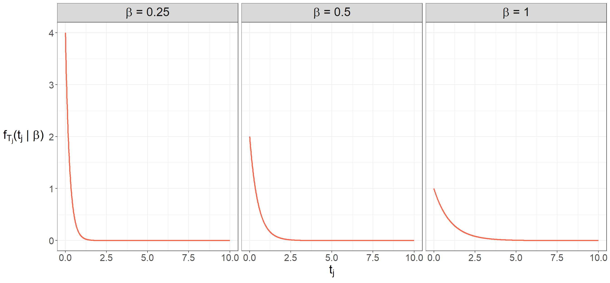
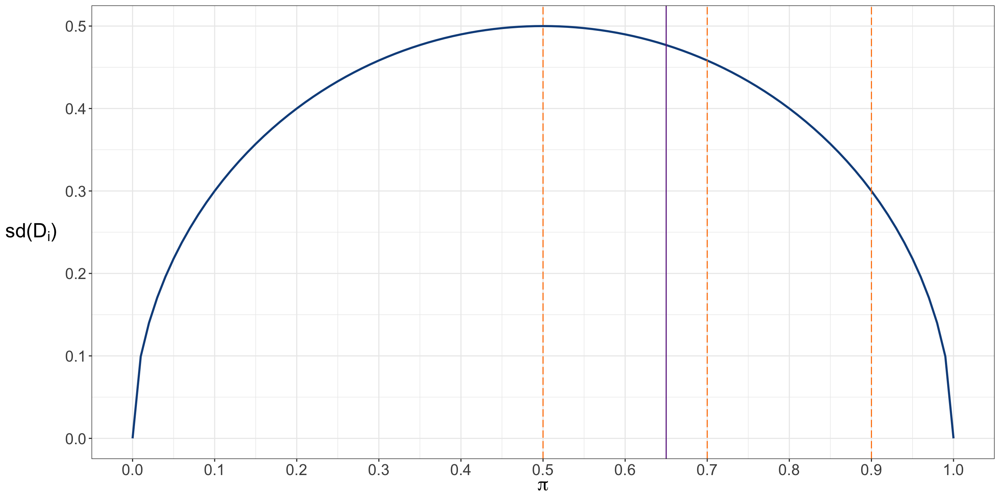
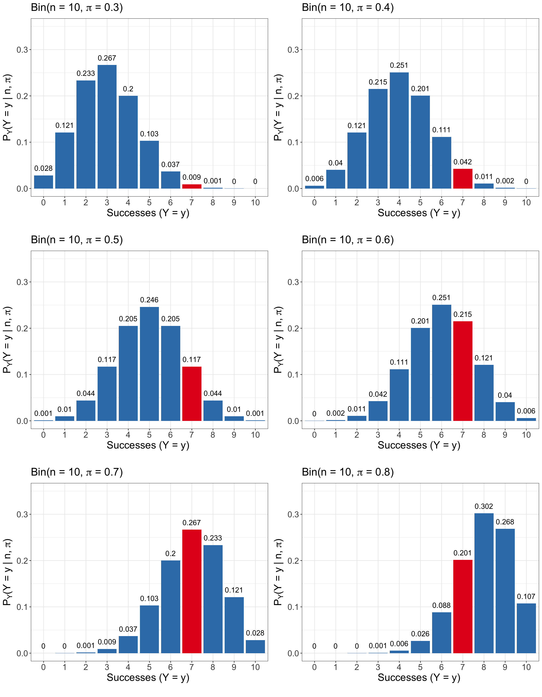
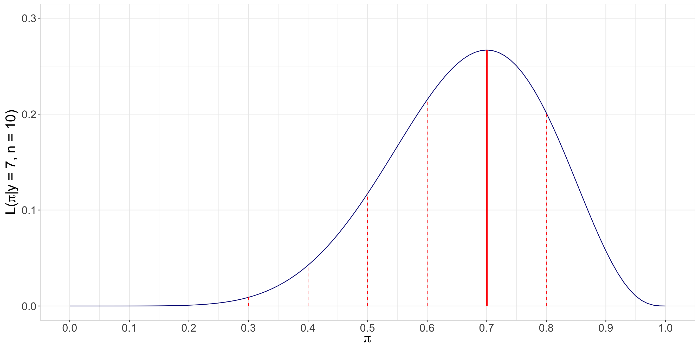

2 Basic Cuisine: A Review on Probability and Frequentist Statistical Inference
The Importance of This Chapter
This chapter will delve into the fundamentals of probability and frequentist statistical inference. Moreover, this review will be important to understanding the philosophy of modelling parameter estimation as outlined in Section 1.2.5. Then, we will pave the way to the rationale behind statistical inference in the Results stage in our workflow from Figure 1.1. Note that we aim to explain all these statistical and probabilistic concepts in the most possible practical way via a made-up case study throughout this chapter (while still presenting useful theoretical admonitions as outlined in Chapter 1).
Learning Objectives
By the end of this chapter, you will be able to:
- Discuss why having a complete conceptual understanding of the process of statistical inference is key when conducting studies for general audiences.
- Explain why probability is the language of statistics.
- Recall foundational probabilistic insights.
- Break down the differences between the two schools of statistical thinking: frequentist and Bayesian.
- Apply the philosophy of generative modelling along with probability distributions in parameter estimation.
- Justify using measures of central tendency and uncertainty to characterize probability distributions.
- Illustrate how random sampling can be used in parameter estimation.
- Describe conceptually what maximum likelihood estimation entails in a frequentist framework.
- Formulate a maximum likelihood approach in parameter estimation.
- Outline the process of a frequentist classical-based hypothesis testing to solve inferential inquiries.
Let us start with a relatable story!

Imagine you are an undergraduate engineering student. Moreover, last term, you just took and passed your first course in probability and statistics (inference included) in an industrial engineering context. Moreover, as it could happen while taking an introductory course in probability and statistics, you used to feel quite overwhelmed by the large amount of jargon and formulas one had to grasp and use regularly for primary engineering fields such as quality control in a manufacturing facility. Population parameters, hypothesis testing, tests statistics, significance level, \(p\)-values, and confidence intervals were appearing here and there. And to your frustration, you could never find a statistical connection between all these inferential tools! Instead, you relied on mechanistic procedures when solving assignments or exam problems.
For instance, when performing hypothesis testing for a two-sample \(t\)-test, you struggled to reflect what the hypotheses were trying to indicate for the corresponding population parameters or how the test statistic was related to these hypotheses. Moreover, your interpretation of the resulting \(p\)-value and/or confidence interval was purely mechanical with the inherent claim:
With a significance level \(\alpha = 0.05\), we reject (or fail to reject, if that is the case) the null hypothesis in given that…
Truthfully, this whole mechanical way of doing statistics is not ideal in a teaching, research or industry environment. Along the same lines, the above situation should also not happen when we learn key statistical topics for the very first time as undergraduate students. That is why we will investigate a more intuitive way of viewing probability and its crucial role in statistical inference. This matter will help us deliver more coherent storytelling (as in Section 1.2.8) when presenting our results in practice during any regression analysis to our peers or stakeholders. Note that the role of probability also extends to model training (as in Section 1.2.5) when it comes to supervised learning and not just regarding statistical inference.
Having said all this, it is time to introduce a statement that is key when teaching hypothesis testing in an introductory statistical inference course:
In statistical inference, everything always boils down to randomness and how we can control it!
That is quite a bold statement! Nonetheless, once one starts presenting statistical topics to audiences not entirely familiar with the usual field jargon, the idea of randomness always persists across many different tools. And, of course, regression analysis is not an exception at all since it also involves inference on population parameters of interest. This is why we have allocated this chapter in the textbook to explain core probabilistic and inferential concepts to pave the way to its role in regression analysis.
Heads-up on why we mean as a non-ideal mechanical analysis!
The reader might need clarification on why the mechanical way of performing hypothesis testing is considered non-ideal, mainly when the term cookbook is used in the book’s title. The cookbook concept here actually refers to a homogenized recipe for data modelling, as seen in the workflow from Figure 1.1. However, there is a crucial distinction between this and the non-ideal mechanical way of hypothesis testing.
On the one hand, the non-ideal mechanical way refers to the use of a tool without understanding the rationale of what this tool stands for, resulting in vacuous and standard statements that we would not be able to explain any way further, such as the statement we previously indicated:
With a significance level \(\alpha = 0.05\), we reject (or fail to reject, if that is the case) the null hypothesis given that…
What if a stakeholder of our analysis asks us in plain words what a significance level means? Why are we phrasing our conclusion on the null hypothesis and not directly on the alternative one? As a data scientist, one should be able to explain why the whole inference process yields that statement without misleading the stakeholders’ understanding. For sure, this also implicates appropriate communication skills that cater to general audiences rather than just technical ones.
Conversely, the data modelling workflow in Figure 1.1 involves stages that necessitate a comprehensive and precise understanding of our analysis. Progressing to the next stage (without a complete grasp of the current one) risks perpetuating false insights, potentially leading to faulty data storytelling of the entire analysis.
Specifically, this chapter will review the following:
- The role of random variables and probability distributions and the governance of population (or system) parameters (i.e., the so-called Greek letters we usually see in statistical inference and regression analysis). Section 2.1 will explore these topics more in detail while connecting them to the subsequent inferential terrain under a frequentist context.
- When delving into supervised learning and regression analysis, we might wonder how randomness is incorporated into model fitting (i.e., parameter estimation). That is quite a fascinating aspect, implemented via a crucial statistical tool known as maximum likelihood estimation. This tool is heavily related to the concept of loss function in supervised learning. Section 2.2 will explore these matters in more detail and how the idea of a random sample is connected to this estimation tool.
- Section 2.3 will explore the basics of hypothesis testing and its intrinsic components such as null and alternative hypotheses, type I and type II errors, significance level, power, observed effect, standard error, test statistic, critical value, \(p\)-value, and confidence interval.
Without further ado, let us start with reviewing core concepts in probability via quite a tasty example.
2.1 Basics of Probability
In terms of regression analysis (either on an inferential or predictive framework), probability can be viewed as the solid foundation on which more complex tools, including estimation and hypothesis testing, are built upon. Having said that, let us scaffold across all the necessary probabilistic concepts that will allow us to move forward into these more complex tools.
2.1.1 First Insights
To start building up our solid probabilistic foundation, we assume our data is coming from a given population or system of interest. Moreover, the population or system is assumed to be governed by parameters which, as data scientists or researchers, they are of our best interest to study. That said, the terms population and parameter will pave the way to our first statistical definitions.
Definition of population
It is a whole collection of individuals or items that share distinctive attributes. As data scientists or researchers, we are interested in studying these attributes, which we assume are governed by parameters. In practice, we must be as specific as possible when defining our given population such that we would frame our entire data modelling process since its very early stages. Examples of a population could be the following:
- Children between the ages of 5 and 10 years old in states of the American West Coast.
- Customers of musical vinyl records in the Canadian provinces of British Columbia and Alberta.
- Avocado trees grown in the Mexican state of Michoacán.
- Adult giant pandas in the Southwestern Chinese province of Sichuan.
- Mature açaí palm trees from the Brazilian Amazonian jungle.
Note that the term population could be exchanged for the term system, given that certain contexts do not particularly refer to individuals or items. Instead, these contexts could refer to processes whose attributes are also governed by parameters. Examples of a system could be the following:
- The production of cellular phones from a given model in a set of manufacturing facilities.
- The sale process in the Vancouver franchises of a well-known ice cream parlour.
- The transit cycle during rush hours on weekdays in the twelve lines of Mexico City’s subway.
Definition of parameter
It is a characteristic (numerical or even non-numerical, such as a distinctive category) that summarizes the state of our population or system of interest. Examples of a population parameter can be described as follows:
- The average weight of children between the ages of 5 and 10 years old in states of the American west coast (numerical).
- The variability in the height of the mature açaí palm trees from the Brazilian Amazonian jungle (numerical).
- The proportion of defective items in the production of cellular phones in a set of manufacturing facilities (numerical).
- The average customer waiting time to get their order in the Vancouver franchises of a well-known ice cream parlour (numerical).
- The most favourite pizza topping of vegetarian adults between the ages of 30 and 40 years old in Edmonton (non-numerical).

Note the standard mathematical notation for population parameters are Greek letters (for more insights, you can check Appendix B). Moreover, in practice, these population parameter(s) of interest will be unknown to the data scientist or researcher. Instead, they would use formal statistical inference to estimate them.
The parameter definition points out a crucial fact in investigating any given population or system:
Our parameter(s) of interest are usually unknown!
Given this fact, it would be pretty unfortunate and inconvenient if we eventually wanted to discover any significant insights about the population or system. Therefore, let us proceed to our so-called tasty example so we can dive into the need for statistical inference and why probability is our perfect ally in this parameter quest.
Imagine you are the owner of a large fleet of ice cream carts, around 900 to be exact. These ice cream carts operate across different parks in the following Canadian cities: Vancouver, Victoria, Edmonton, Calgary, Winnipeg, Ottawa, Toronto, and Montréal. In the past, to optimize operational costs, you decided to limit ice cream cones to only two items: vanilla and chocolate flavours, as in Figure 2.1.

Now, let us direct this whole case onto a more statistical and probabilistic field; suppose you have a well-defined overall population of interest for those above eight Canadian cities: children between 4 and 11 years old attending these parks during the Summer weekends. Of course, Summer time is coming this year, and you would like to know which ice cream cone flavour is the favourite one for this population (and by how much!). As a business owner, investigating ice cream flavour preferences would allow you to plan Summer restocks more carefully with your corresponding suppliers. Therefore, it would be essential to start collecting consumer data so the company can tackle this demand query.
Also, suppose there is a second query. For the sake of our case, we will call it a time query. As a critical component of demand planning, besides estimating which cone flavour is the most preferred one (and by how much!) for the above population of interest, the operations area is currently requiring a realistic estimation of the average waiting time from one customer to the next one in any given cart during Summer weekends. This average waiting time would allow the operations team to plan carefully how much stock each cart should have so there will not be any waste or shortage.

Note that the time query is related to a different population from the previous query. Therefore, we can define it as all our ice cream customers during the Summer weekends and not just all the children between 4 and 11 years old attending the parks during Summer weekends. Consequently, it is crucial to note that the nature of our queries will dictate how we define our population and our subsequent data modelling and statistical inference.
Summer time represents the most profitable season from a business perspective, thus solving these above two queries is a significant priority for your company. Hence, you decide to organize a meeting with your eight general managers (one per Canadian city). Finally, during the meeting with the general managers, it was decided to do the following:
- For the demand query, a comprehensive market study will be run on the population of interest across the eight Canadian cities right before next Summer; suppose we are currently in Spring.
- For the time query, since the operations team has not previously recorded any historical data (surprisingly!), all vendor staff from the 900 carts will start collecting data on the waiting time in seconds between each customer this upcoming Summer.
When discussing study requirements for the marketing firm who would be in charge of it for the demand query, Vancouver’s general manager dares to state the following:
Since we’re already planning to collect consumer data on these cities, let’s mimic a census-type study to ensure we can have the most precise results on their preferences.
On the other hand, when agreeing on the specific operations protocol to start recording waiting times for all the 900 vending carts this upcoming Summer, Ottawa’s general manager provides a comment for further statistical food for thought:
The operations protocol for recording waiting times in the 900 vending carts looks too cumbersome to implement straightforwardly this upcoming Summer. Why don’t we select a smaller set of waiting times between two general customers across the 900 ice cream carts in the eight cities to have a more efficient process implementation that would allow us to optimize operational costs?
Bingo! Ottawa’s general manager just nailed the probabilistic way of making inference on our population parameter of interest for the time query. Indeed, their comment was primarily framed from a business perspective of optimizing operational costs. Still, this fact does not take away a crucial insight on which statistical inference is built: a random sample (as in its corresponding definition). As for Vancouver’s general manager, their proposal is not feasible. Mimicking a census-type study might not be the most optimal decision for the demand query given the time constraint and the potential size of its target population.
Heads-up on the use random sampling with probabilistic foundations!
Let us clarify things from the start, especially from a statistical perspective:
Realistically, there is no cheap and efficient way to conduct a census-type study for either of the two queries.
We must rely on probabilistic random sampling, selecting two small subsets of individuals from our two populations of interest. This approach allows us to save both financial and operational resources compared to conducting a complete census. However, random sampling requires us to use various probabilistic and inferential tools to manage and report the uncertainty associated with the estimation of the corresponding population parameters, which will help us answer our initial main queries.
Therefore, having said all this, let us assume that in this ice cream case, the company decided to go ahead with random sampling to answer both queries.
Moving on to one of the core topics in this chapter, we can state that probability is viewed as the language to decode random phenomena that occur in any given population or system of interest. In our example, we have two random phenomena:
- For the demand query, a phenomenon can be represented by the preferred ice cream cone flavour of any randomly selected child between 4 and 11 years old attending the parks of the above eight Canadian cities during the Summer weekends.
- Regarding the time query, a phenomenon of this kind can be represented by any randomly recorded waiting time between two customers during a Summer weekend in any of the above eight Canadian cities across the 900 ice cream carts.
Now, let us finally define what we mean by probability along with the inherent concept of sample space.
Definition of probability
Let \(A\) be an event of interest in a random phenomenon of a population or system of interest, whose all possible outcomes belong to a given sample space \(S\). Generally, the probability for this event \(A\) happening can be mathematically depicted as \(P(A)\). Moreover, suppose we observe the random phenomenon \(n\) times such as we were running some class of experiment, then \(P(A)\) is defined as the following ratio:
\[ P(A) = \frac{\text{Number of times event $A$ is observed}}{n}, \tag{2.1}\]
as the \(n\) times we observe the random phenomenon goes to infinity.
Equation 2.1 will always put \(P(A)\) in the following numerical range:
\[ 0 \leq P(A) \leq 1. \]
Definition of sample space
Let \(A\) be an event of interest in a random phenomenon of a population or system of interest. The sample space \(S\) of event \(A\) denotes the set of all the possible random outcomes we might encounter every time we randomly observe \(A\) such as we were running some class of experiment.
Note each of these outcomes has a determined probability associated with them. If we add up all these probabilities, the probability of the sample space \(S\) will be one, i.e.,
\[ P(S) = 1. \tag{2.2}\]
2.1.2 Schools of Statistical Thinking
Note the above definition for the probability of an event \(A\) specifically highlights the following:
… as the \(n\) times we observe the random phenomenon goes to infinity.
The “infinity” term is key when it comes to understanding the philosophy behind the frequentist school of statistical thinking in contrast to its Bayesian counterpart. In general, the frequentist way of practicing statistics in terms of probability and inference is the approach we usually learn in introductory courses, more specifically when it comes to hypothesis testing and confidence intervals which will be explored in Section 2.3. That said, the Bayesian approach is another way of practicing statistical inference. Its philosophy differs in what information is used to infer our population parameters of interest. Below, we briefly define both schools of thinking.
Definition of frequentist statistics
This statistical school of thinking heavily relies on the frequency of events to estimate specific parameters of interest in a population or system. This frequency of events is reflected in the repetition of \(n\) experiments involving a random phenomenon within this population or system.
Under the umbrella of this approach, we assume that our governing parameters are fixed. Note that, within the philosophy of this school of thinking, we can only make precise and accurate predictions as long as we repeat our \(n\) experiments as many times as possible, i.e.,
\[ n \rightarrow \infty. \]
Definition of Bayesian statistics
This statistical school of thinking also relies on the frequency of events to estimate specific parameters of interest in a population or system. Nevertheless, unlike frequentist statistics, Bayesian statisticians use prior knowledge on the population parameters to update their estimations on them along with the current evidence they can gather. This evidence is in the form of the repetition of \(n\) experiments involving a random phenomenon. All these ingredients allow Bayesian statisticians to make inference by conducting appropriate hypothesis testings, which are designed differently from their mainstream frequentist counterpart.

Under the umbrella of this approach, we assume that our governing parameters are random; i.e., they have their own sample space and probabilities associated to their corresponding outcomes. The statistical process of inference is heavily backed up by probability theory mostly in the form of the Bayes’ rule (named after Reverend Thomas Bayes, an English statistician from the 18th century). This rule uses our current evidence along with our prior beliefs to deliver a posterior distribution of our random parameter(s) of interest.
Let us put the definitions for these two schools of statistical thinking into a more concrete example. We can use the demand query from our ice cream case as a starting point. More concretely, we can dig more into a standalone population parameter such as the probability that a randomly selected child between 4 and 11 years old, attending the parks of the above eight Canadian cities during the Summer weekends, prefers the chocolate-flavoured ice cream cone over the vanilla one. Think about the following two hypothetical questions:
- From a frequentist point of view, what is the estimated probability of preferring chocolate over vanilla after randomly surveying \(n = 100\) children from our population of interest?
- Using a Bayesian approach, suppose the marketing team has found ten prior market studies on similar children populations on their preferred ice cream flavour (between chocolate and vanilla). Therefore, along with our actual random survey of \(n = 100\) children from our population of interest, what is the posterior estimation of the probability of preferring chocolate over vanilla?
By comparing the above (a) and (b), we can see one characteristic in common when it comes to the estimation of the probability of preferring chocolate over vanilla: both frequentist and Bayesian approaches rely on the gathered evidence coming from the random survey of \(n = 100\) children from our population of interest. On the one hand, the frequentist approach solely relies on observed data to estimate this single probability of preferring chocolate over vanilla. On the other hand, the Bayesian approach uses the observed data in conjunction with the prior knowledge provided by the ten estimated probabilities to deliver a whole posterior distribution (i.e., the posterior estimation) of the probability of preferring chocolate over vanilla.
Heads-up on the debate between frequentist and Bayesian statistics!
Even though most of us began our statistical journey in a frequentist framework, we might be tempted to state that a Bayesian paradigm for parameter estimation and inference is better than a frequentist one since the former only takes into account the observed evidence without the prior knowledge on our parameters of interest.
In the statistical community, there could be a fascinating debate between the pros and cons of each school of thinking. That said, it is crucial to state that no paradigm is considered wrong! Instead, using a pragmatic strategy of performing statistics according to our specific context is more convenient.
Tip on further Bayesian and frequentist insights!
Let us check the following two examples (aside from our ice cream case) to illustrate the above pragmatic way of doing things:
- Take the production of cellular phones from a given model in a set of manufacturing facilities as the context. Hence, one might find a frequentist estimation of the proportion of defective items as a quicker and more efficient way to correct any given manufacturing process. That is, we will sample products from our finalized batches and check their status (defective or non-defective, our observed evidence) to deliver a proportion estimation of defective items.
- Now, take a physician’s context. It would not make a lot of sense to study the probability that a patient develops a certain disease by only using a frequentist approach, i.e., looking at the current symptoms which account for the observed evidence. In lieu, a Bayesian approach would be more suitable to study this probability which uses the observed evidence combined with the patient’s history (i.e., the prior knowledge) to deliver our posterior belief on the disease probability.
Having said all this, it is important to reiterate that the focus of this textbook is purely frequentist in regards to data modelling in regression analysis. If you would like to explore the fundamentals of the Bayesian paradigm; Johnson, Ott, and Dogucu (2022) have developed an amazing textbook on the basic probability theory behind this school of statistical thinking along with a whole variety regression techniques including the parameter estimation rationale.
2.1.3 The Random Variables
As we continue our frequentist quest to review the probabilistic insights related to parameter estimation and statistical inference, we will focus on our ice cream case while providing a comprehensive array of definitions. Many of these definitions are inspired by the work of Casella and Berger (2024) and Soch et al. (2024).
Each time we introduce a new probabilistic or statistical concept, we will apply it immediately to this ice cream case, allowing for hands-on practice that meets the learning objectives of this chapter. It is important to pay close attention to the definition and heads-up admonitions, as they are essential for fully understanding how these concepts apply to the ice cream case. On the other hand, the tip admonitions are designed to offer additional theoretical insights that may interest you, but they can be skipped if you prefer.
| Demand Query | Time Query | |
|---|---|---|
| Statement | We would like to know which ice cream flavour is the favourite one (either chocolate or vanilla) and by how much. | We would like to know the average waiting time from one customer to the next one in any given ice cream cart. |
| Population of interest | Children between 4 and 11 years old attending different parks in Vancouver, Victoria, Edmonton, Calgary, Winnipeg, Ottawa, Toronto, and Montréal during Summer weekends. | All our general customer-to-customer waiting times in the different parks of Vancouver, Victoria, Edmonton, Calgary, Winnipeg, Ottawa, Toronto, and Montréal during Summer weekends across the 900 ice cream carts. |
| Parameter | Proportion of individuals from the population of interest who prefer the chocolate flavour versus the vanilla flavour. | Average waiting time from one customer to the next one. |
Table 2.1 presents the general statements and populations of interest derived from our two queries: demand and time. It is important to note that these general statements are based on the storytelling we initiated in Section 2.1.1. In practice, summarizing the overarching statistical problem is essential. This will enable us to translate the corresponding issue into a specific statement and population, from which we can define the parameters we aim to estimate later in our statistical process.
Now, recall that in our initial meeting with the general managers, Ottawa’s general manager provided valuable statistical insights regarding the foundation of a random sample. For the time query, they suggested selecting a smaller set of waiting times between two general customers across the 900 ice cream carts. We already addressed this process as sampling, more specifically random sampling in technical language.
Similarly, we can apply this concept to the demand query by selecting a subgroup of children aged 4 to 11 who are visiting different parks in these eight cities. Then, we can ask them about their favorite ice cream flavour, specifically whether they prefer chocolate or vanilla. It is important to note that we are not conducting any census-type studies; instead, we are carrying out two studies that heavily rely on sampling to estimate population parameters.
Furthermore, we want to ensure that our two groups of observations—both children and waiting times—are representative of their respective populations. So, how can we achieve this? The baseline key is through what we call simple random sampling. This process involves the following per query:
- For the demand query, let us assume there are \(N_d\) observations in our population of interest. In a simple random sampling scheme with replacement, our random sample will consist of \(n_d\) observations (noting that \(n_d << N_d\)), each having the same probability of being selected for our estimation and inferential purposes, which is given by \(\frac{1}{N_d}\).
- For the time query, assume there are \(N_t\) observations in our population of interest. Again, in a simple random sampling scheme with replacement, our random sample will consist of \(n_t\) observations (noting that \(n_t << N_t\)), each having the same probability of selection for estimation and inferential purposes, which is \(\frac{1}{N_t}\).
Heads-up on sampling with replacement!
Keep in mind that sampling with replacement means you return any specific drawn observation back to the corresponding population before the next draw.
Tip of further sampling techniques!
If you want to explore additional and more complex sampling techniques besides simple random sampling, Section 1.2.2 provides further details and an external resource.
We can observe the concept of randomness reflected throughout the sampling schemes mentioned above. This aligns with what we referred to as random phenomena in both queries back in Section 2.1.1. Consequently, there should be a way to mathematically represent these phenomena, and the random variable is the starting point in this process.
Definition of random variable
A random variable is a function where the input values correspond to real numbers assigned to events belonging to the sample space \(S\), and whose outcome is one of these real numbers after executing a given random experiment. For instance, a random variable (and its support, i.e., real numbers) is depicted with an uppercase such that
\[Y \in \mathbb{R}.\]
To begin experimenting with random variables in this ice cream case, we need to define them. It is important to be as clear as possible when defining random variables, and we should also remember to use uppercase letters as follows:
\[ \begin{align*} D_i &= \text{A favourite ice cream flavour of a randomly surveyed $i$th child} \\ & \qquad \text{between 4 and 11 years old attending the parks of} \\ & \qquad \text{Vancouver, Victoria, Edmonton, Calgary,} \\ & \qquad \text{Winnipeg, Ottawa, Toronto, and Montréal} \\ & \qquad \text{during the Summer weekends} \\ & \qquad \qquad \qquad \qquad \qquad \qquad \qquad \qquad \qquad \qquad \qquad \text{for $i = 1, \dots, n_d.$} \\ \\ T_j &= \text{A randomly recorded $j$th waiting time in minutes between two} \\ & \qquad \text{customers during a Summer weekend in any of the above} \\ & \qquad \text{eight Canadian cities across the 900 ice cream carts} \\ & \qquad \qquad \qquad \qquad \qquad \qquad \qquad \qquad \qquad \qquad \qquad \text{for $j = 1, \dots, n_t.$} \\ \end{align*} \]
Note that the demand query corresponds to the \(i\)th random variable \(D_i\), where the subindex \(i\) ranges from \(1\) to \(n_d\). The term \(n_d\) represents the sample size for this query and theoretically indicates the number of random variables we intend to observe from our population of interest during our sampling. On the other hand, for the time query, we have the \(j\)th random variable \(T_j\), with the subindex \(j\) ranging from \(1\) to \(n_t\). In the context of this query, \(n_t\) denotes the sample size and indicates how many random variables we plan to observe from our population of interest as part of our sampling.
Now, \(D_i\) will require real numbers that correspond to potential outcomes derived from the specific demand sample space of ice cream flavour. It is crucial to note that a given child from our population may prefer a flavour other than chocolate or vanilla—for example, strawberry, salted caramel, or pistachio. However, we are limited by our available flavour menu as a company. Therefore, we will restrict our survey question regarding these potential \(n_d\) surveyed children as follows:
\[ d_i = \begin{cases} 1 \qquad \text{The surveyed child prefers chocolate.}\\ 0 \qquad \text{Otherwise.} \end{cases} \tag{2.3}\]
In the modelling associated with Equation 2.3, an observed random variable \(d_i\) (thus, the lowercase) can only yield values of \(1\) if the surveyed child prefers chocolate and \(0\) otherwise. The term “otherwise” refers to any flavour other than chocolate, which, in our limited menu context, is vanilla.
To define the real numbers from a given waiting time sample space, associated with an observed random variable \(t_j\) (thus, the lowercase) measured in minutes, we need to establish a possible range for these waiting times. It would not make sense to have observed negative waiting times in this ice cream scenario; therefore, our lower bound for this range of potential values should be \(0\) minutes. However, we cannot set an upper limit on these waiting times since any ice cream vendor might need to wait for \(1, 2, 3, \ldots, 10, \ldots, 20, \ldots, 60, \ldots\) minutes for the next customer to arrive. In fact, it is possible to wait for a very long time, especially on a low sales day! Thus, the range of this observed random variable can be expressed as:
\[ t_j \in [0, \infty), \]
where the \(\infty\) symbol indicates no upper bound.
After defining the possible values for our two random variables \(D_i\) and \(T_j\), we will now classify them correctly using further probabilistic definitions as shown below.
Definition of discrete random variable
Let \(Y\) be a random variable whose support is \(\mathcal{Y}\). If this support \(\mathcal{Y}\) corresponds to a finite set or a countably infinite set of possible values, then \(Y\) is considered a discrete random variable.
For instance, we can encounter discrete random variables which could be classified as
- binary (i.e., a finite set of two possible values),
- categorical (either nominal or ordinal, which have a finite set of three or more possible values), or
- counts (which might have a finite set or a countably infinite set of possible values as integers).
Definition of continuous random variable
Let \(Y\) be a random variable whose support is \(\mathcal{Y}\). If this support \(\mathcal{Y}\) corresponds to an uncountably infinite set of possible values, then \(Y\) is considered a continuous random variable.
Note a continuous random variable could be
- completely unbounded (i.e., its set of possible values goes from \(-\infty\) to \(\infty\) as in \(-\infty < y < \infty\)),
- positively unbounded (i.e., its set of possible values goes from \(0\) to \(\infty\) as in \(0 \leq y < \infty\)),
- negatively unbounded (i.e., its set of possible values goes from \(-\infty\) to \(0\) as in \(-\infty < y \leq 0\)), or
- bounded between two values \(a\) and \(b\) (i.e., its set of possible values goes from \(a\) to \(b\) as in \(a \leq y \leq b\)).
Therefore, we can classify our two random variables as follows:
- For the demand query, the support of \(D_i\) (denoted as \(\mathcal{D}\)) is a countable finite set with two possible values: \(d_i \in \{0, 1\}\), as noted by Equation 2.3. Therefore, \(D_i\) is categorized as a binary discrete random variable.
- For the time query, the support of \(T_j\) (denoted as \(\mathcal{T}\)) is positively unbounded. This results in an uncountably infinite set of values that \(T_j\) can take, including (but not limited to) \(0, \dots, 0.01, \ldots, 0.02, \ldots, 0.00234, \ldots, 1, \ldots, 1.5576, \ldots\) minutes. Therefore, \(T_j\) is classified as a positively unbounded continuous random variable.
So far, we have successfully translated our two statistical queries into proper random variables, along with clear definitions and classifications derived from our problem statements, as well as the populations of interest, as noted in Table 2.1. However, we still need to find a way to include our parameters. The upcoming section will allow us to do that.
2.1.4 The Wonders of Generative Modelling and Probability Distributions
Before exploring the wonders of generative models, let us introduce Table 2.2, an extension of Table 2.1 that now includes the elements discussed in Section 2.1.3.
| Demand Query | Time Query | |
|---|---|---|
| Statement | We would like to know which ice cream flavour is the favourite one (either chocolate or vanilla) and by how much. | We would like to know the average waiting time from one customer to the next one in any given ice cream cart. |
| Population of interest | Children between 4 and 11 years old attending different parks in Vancouver, Victoria, Edmonton, Calgary, Winnipeg, Ottawa, Toronto, and Montréal during Summer weekends. | All our general customer-to-customer waiting times in the different parks of Vancouver, Victoria, Edmonton, Calgary, Winnipeg, Ottawa, Toronto, and Montréal during Summer weekends across the 900 ice cream carts. |
| Parameter | Proportion of individuals from the population of interest who prefer the chocolate flavour versus the vanilla flavour. | Average waiting time from one customer to the next one. |
| Random variable | \(D_i\) for \(i = 1, \dots, n_d\). | \(T_j\) for \(j = 1, \dots, n_t\). |
| Random variable definition | A favourite ice cream flavour of a randomly surveyed \(i\)th child between 4 and 11 years old attending the parks of Vancouver, Victoria, Edmonton, Calgary, Winnipeg, Ottawa, Toronto, and Montréal during the Summer weekends. | A randomly recorded \(j\)th waiting time in minutes between two customers during a Summer weekend across the 900 ice cream carts found in Vancouver, Victoria, Edmonton, Calgary, Winnipeg, Ottawa, Toronto, and Montréal. |
| Random variable type | Discrete and binary. | Continuous and positively unbounded. |
| Random variable support | \(d_i \in \{ 0, 1\}\) as in Equation 2.3. | \(t_j \in [0, \infty).\) |
Having summarized all our probabilistic elements in Table 2.2, the parameters of interest must come into play for our data modelling game. Hence, the question is:
Is there any feasible way to do so via the foundations of random variables?
The answer lies in what we call a generative model, for which we have a whole toolbox corresponding to another important concept called probability distributions, as shown below.
Definition of generative model
Suppose you observe some data \(y\) from a population or system of interest. Moreover, let us assume this population or system is governed by \(k\) parameters contained in the following vector:
\[ \boldsymbol{\theta} = (\theta_1, \theta_2, \cdots, \theta_k)^T. \]
If we state that the random variable \(Y\) follows certain probability distribution \(\mathcal{D}(\cdot),\) then we will have a generative model \(m\) such that
\[ \text{$m$: } Y \sim \mathcal{D}(\boldsymbol{\theta}). \]

Definition of probability distribution
When we set a random variable \(Y\), we also set a new set of \(v\) possible outcomes \(\mathcal{Y} = \{ y_1, \dots, y_v\}\) coming from the sample space \(S\). This new set of possible outcomes \(\mathcal{Y}\) corresponds to the support of the random variable \(Y\) (i.e., all the possible values that could be taken on once we execute a given random experiment involving \(Y\)).
That said, let us suppose we have a sample space of \(u\) elements defined as
\[ S = \{ s_1, \dots, s_u \}, \]
where each one of these elements has a probability assigned via a function \(P_S(\cdot)\) such that
\[ P(S) = \sum_{i = 1}^u P_S(s_i) = 1. \]
which has to satisfy Equation 2.2.
Then, the probability distribution of \(Y\), i.e., \(P_Y(\cdot)\) assigns a probability to each observed value \(Y = y_j\) (with \(j = 1, \dots, v\)) if and only if the outcome of the random experiment belongs to the sample space, i.e., \(s_i \in S\) (for \(i = 1, \dots, u\)) such that \(Y(s_i) = y_j\):
\[ P_Y(Y = y_j) = P \left( \left\{ s_i \in S : Y(s_i) = y_j \right\} \right). \]
Since we have two different queries, we will use two instances of generative models. It is worth noting that more complex modelling could refer to a single generative model. However, for the purposes of this review chapter, we will keep it simple with via two separate generative models.
Now, let us introduce a specific notation for our discussion: the Greek alphabet. Greek letters are frequently used to statistically represent population parameters in modelling setups, estimation, and statistical inference. These letters will be quite useful for our parameters in this ice cream case.
Tip on the Greek alphabet in statistics!
In the early stages of learning statistical modelling, including concepts such as regression analysis, it is common to feel overwhelmed by unfamiliar letters and terminology. Whenever confusion arises in any of the main chapters of this book regarding these letters, we recommend referring to the Greek alphabet found in Appendix B. It is important to note that frequentist statistical inference primarily uses lowercase letters. With consistent practice over time, you will likely memorize most of this alphabet.
Let us retake the row corresponding to parameters in Table 2.2 and assign their Greek letters:
- For the demand query, we are interested in the parameter \(\pi\), which represents the proportion of individuals from the children population who prefer the chocolate flavour over the vanilla flavour. It is crucial to note that a proportion is always bounded between \(0\) and \(1\), similar to how probabilities function. For instance, a proportion of \(0.2\) would mean that \(20\%\) of the children in our population prefer chocolate flavour over vanilla. This definition establishes our demand query parameter as follows:
\[ \pi \in [0, 1]. \]
Heads-up on the use of \(\pi\)!
In this textbook, unless stated otherwise, the letter \(\pi\) will denote a population parameter and not the mathematical constant \(3.141592...\)
- For the time query, we are interested in the parameter \(\beta\), which represents the average waiting time in minutes from one customer to the next one in our population of interest. Unlike the above \(\pi\) parameter, \(\beta\) is only positively unbounded given the definition of our random variable \(T_j\). Therefore, this definition establishes our time query parameter as follows:
\[ \beta \in (0, \infty). \]
Having defined our parameters of interest with proper lowercase Greek letters, it is time to declare our corresponding generative models on a general basis. For the demand query, there will be a single parameter called \(\pi\), where the randomly surveyed child \(D_i\) will follow the model \(m_D\) such that
\[ \begin{gather*} m_D : D_i \sim \mathcal{D}_D(\pi) \\ \qquad \qquad \qquad \qquad \qquad \qquad \qquad \qquad \quad \text{for $i = 1, \dots, n_d.$} \end{gather*} \tag{2.4}\]
Now, for the time query, there will also be a single parameter called \(\beta\). Thus, the randomly recorded waiting time \(T_j\) will follow the model \(m_T\) such that
\[ \begin{gather*} m_T : T_j \sim \mathcal{D}_T(\beta) \\ \qquad \qquad \qquad \qquad \qquad \qquad \qquad \qquad \quad \text{for $j = 1, \dots, n_t.$} \end{gather*} \tag{2.5}\]
Nonetheless, we might wonder the following:
How can we determine the corresponding distributions \(\mathcal{D}_D(\pi)\) and \(\mathcal{D}_T(\beta)\)?
Of course the above definition of a probability distribution will come in handy to resolve this question. That said, given that we have two types of random variables (discrete and continuous), it is necessary to introduce two specific types of probability functions: probability mass function (PMF) and probability density function (PDF).
Definition of probability mass function (PMF)
Let \(Y\) be a discrete random variable whose support is \(\mathcal{Y}\). Moreover, suppose that \(Y\) has a probability distribution such that
\[ P_Y(Y = y) : \mathbb{R} \rightarrow [0, 1] \]
where, for all \(y \notin \mathcal{Y}\), we have
\[ P_Y(Y = y) = 0 \]
and
\[ \sum_{y \in \mathcal{Y}} P_Y(Y = y) = 1. \tag{2.6}\]
Then, \(P_Y(Y = y)\) is considered a PMF.
As we have discussed throughout this ice cream case, let us begin with the demand query. We have already defined the \(i\)th random variable \(D_i\) as discrete and binary. In statistical literature, certain random variables in common random processes can be modelled using what we call parametric families. We refer to these tools as parametric families because they are characterized by a specific set of parameters (in our case, each query has a single-element set, such as \(\pi\) or \(\beta\)).
Moreover, we call them families since each member corresponds to a particular value of our parameter(s). For instance, in our demand query, a chosen member could be where \(\pi = 0.8\) within the respective chosen parametric family to model our surveyed children. Other possible members could correspond to \(\pi = 0.2\), \(\pi = 0.4\) or \(\pi = 0.6\). In fact, the number of members in our chosen parametric family is infinite in this demand query!
Therefore, what parametric family can we choose for our demand query?
The question above introduces a new, valuable resource that is further elaborated upon in Appendix C. This resource outlines the various distributions that will be utilized in this textbook. In reality, the realm of parametric families—specifically, distributions—is quite extensive, and appendix material serves as only a brief overview of the many parametric families documented in statistical literature.
Tip on data modelling alternatives via different parametric families!
Any data model is simply an abstraction of reality, and different parametric families can provide various alternatives for modelling. In practice, we often need to select a specific family based on our particular inquiries and the conditions of our data. This process requires time and experience to master. Furthermore, it is important to note that different families are often interconnected!
If you wish to explore the world of univariate distribution families—which are used to model a single random variable—Leemis (n.d.) has created a comprehensive relational chart that covers 76 distinct probability distributions: 19 are discrete, and 57 are continuous. However, this chart does not encompass all the possible families that one might encounter in statistical literature (you can check another list at the end of this section).
Referring back to our discussion about Appendix C, it is time to choose the most suitable parametric family for a discrete and a binary random variable, such as the \(i\)th random variable \(D_i\). A particular case we can examine is the Bernoulli distribution (also, commonly known as a Bernoulli trial). The Bernoulli distribution applies to a discrete random variable that can take one of two values: \(0\), which we refer to as a failure, and \(1\), identified as a success. This aligns with our previous definition from Equation 2.3:
\[ d_i = \begin{cases} 1 \qquad \text{The surveyed child prefers chocolate.}\\ 0 \qquad \text{Otherwise.} \end{cases} \]
The equation above defines the chocolate preference of the \(i\)th surveyed child as a success, while another flavour—specifically vanilla in the context of our limited menu—is categorized as a failure. Thus, we can denote the support as \(d_i \in \{0, 1\}\).
We need to define our population parameter for this demand query in the context of a Bernoulli trial, which is denoted by \(\pi \in [0, 1]\). This represents the proportion of children who prefer the chocolate flavour over the vanilla flavour. In a Bernoulli trial, this parameter refers to the probability of success. Lastly, we can specify our generative model accordingly:
\[ \begin{gather*} m_D : D_i \sim \text{Bern}(\pi) \\ \qquad \qquad \qquad \qquad \qquad \qquad \qquad \qquad \quad \text{for $i = 1, \dots, n_d.$} \end{gather*} \]
We must define the PMF corresponding to the above generative model. The statistical literature assigns the following PMF for the a Bernoulli trial \(D_i\):
\[ P_{D_i} \left( D_i = d_i \mid \pi \right) = \pi^{d_i} (1 - \pi)^{1 - d_i} \quad \text{for $d_i \in \{ 0, 1 \}$.} \tag{2.7}\]
A further question arises regarding whether Equation 2.7 satisfies the condition of the total probability of the sample space defined in the Equation 2.6 under the definition of a PMF. This condition states that a valid PMF should result in a total probability equal to one when we sum all the probabilities produced by this function over every possible value that the random variable can take.
Hence, we can state Equation 2.7 is a proper probability distribution (i.e., all the standalone probabilities over the support of \(D_i\) add up to one) given that:
Proof. \[ \begin{align*} \sum_{d_i = 0}^1 P_{D_i} \left( D_i = d_i \mid \pi \right) &= \sum_{d_i = 0}^1 \pi^{d_i} (1 - \pi)^{1 - d_i} \\ &= \underbrace{\pi^0}_{1} (1 - \pi) + \pi \underbrace{(1 - \pi)^{0}}_{1} \\ &= (1 - \pi) + \pi \\ &= 1. \qquad \qquad \qquad \qquad \quad \square \end{align*} \tag{2.8}\]
Indeed, this Bernoulli PMF is a proper probability distribution!
The probability distribution, obtained from Equation 2.8, is summarized in Table 2.3. Note that the chocolate preference has a probability equal to \(\pi\), whereas the vanilla preference corresponds to the complement \(1 - \pi\). This probability arrangement completely fulfils the corresponding probability condition of the sample space seen in Equation 2.6.
| \(d_i\) | \(P_{D_i} \left( D_i = d_i \mid \pi \right)\) |
|---|---|
| \(0\) | \(1 - \pi\) |
| \(1\) | \(\pi\) |
To proceed with the time query, we need to analyze the \(j\)th continuous random variable \(T_j\) and subsequently work with a PDF.
Definition of probability density function (PDF)
Let \(Y\) be a continuous random variable whose support is \(\mathcal{Y}\). Furthermore, consider a function \(f_Y(y)\) such that
\[ f_Y(y) : \mathbb{R} \rightarrow \mathbb{R} \]
with
\[ f_Y(y) \geq 0. \tag{2.9}\]
Then, \(f_Y(y)\) is considered a PDF if the probability of \(Y\) taking on a value within the range represented by the subset \(A \subset \mathcal{Y}\) is equal to
\[ P_Y(Y \in A) = \int_A f_Y(y) \mathrm{d}y \]
with
\[ \int_{\mathcal{Y}} f_Y(y) \mathrm{d}y = 1. \tag{2.10}\]
To begin our second analysis, let us examine the nature of the variable \(T_j\) represented as a continuous random variable. This variable is nonnegative, meaning it is positively unbounded, as it models a waiting time. We can interpret \(T_j\) as the waiting time until a specific event of interest occurs, such as when the next customer arrives at the ice cream cart. In statistical literature, this is commonly referred to as a survival time. Hence, we might wonder:
What is the most suitable parametric family to model a survival time?
Well, in this case within our textbook and in general in statistical literature, there is more than one alternative to model a continuous and nonnegative survival time. Appendix C offers four possible ways:
-
Exponential. A random variable with a single parameter that can come in either of the following forms:
- As a rate \(\lambda \in (0, \infty)\), which generally defines the mean number of events of interest per time interval or space unit.
- As a scale \(\beta \in (0, \infty)\), which generally defines the mean time until the next event of interest occurs.
- Weibull. A random variable that is a generalization of the Exponential distribution. Note its distributional parameters are the scale continuous parameter \(\beta \in (0, \infty)\) and shape continuous parameter \(\gamma \in (0, \infty)\).
- Gamma A random variable whose distributional parameters are the shape continuous parameter \(\eta \in (0, \infty)\) and scale continuous parameter \(\theta \in (0, \infty)\).
- Lognormal. A random variable whose logarithmic transformation yields a Normal distribution. Its distributional parameters are the Normal location continuous parameter \(\mu \in (-\infty, \infty)\) and Normal scale continuous parameter \(\sigma^2 \in (0, \infty)\).
In our context, as summarized in the corresponding generative model, it is in our best interest to select a probability distribution characterized by a single parameter. Therefore, the Exponential distribution is the most suitable choice for our current time query, particularly under the scale parametrization, since we aim to estimate the waiting time between two customers.
Heads-up on survival analysis!
Although our ice cream case can be straightforwardly modelled using an Exponential distribution for our time query, by using a single population parameter which indicates a mean waiting time between two customers, it is important to stress that other distributions, such as the Weibull, Gamma, or Lognormal, are also entirely valid options. In fact, utilizing these distributions, that involve more than just a standalone parameter, can enhance the flexibility of our data modelling!
Additionally, there is a specialized statistical field focused on modelling waiting times—specifically, the time until an event of interest occurs. These types of times are formally referred to as survival times, and the associated field is known as survival analysis. It is worth noting that regression analysis can be extended to this area, and Chapter 6 will provide a more in-depth exploration of various parametric models that involve the Exponential, Weibull, and Lognormal distributions.
Since we are using an Exponential distribution, we need to establish our population parameter for this time query. As mentioned in Table 2.2, this parameter refers to the average (or mean) waiting time from one customer to the next. This corresponds to a scale parametrization, where the parameter \(\beta \in (0, \infty)\) defines the mean time until the next event of interest occurs (in this case, the next customer). Therefore, we can specify our generative model as follows:
\[ \begin{gather*} m_T : T_j \sim \text{Exponential}(\beta) \\ \qquad \qquad \qquad \qquad \qquad \qquad \qquad \qquad \quad \text{for $j = 1, \dots, n_t.$} \end{gather*} \]
Since \(T_j\) is a continuous random variable, we must define the PMF corresponding to the above generative model. The statistical literature assigns the following PDF for \(T_j\):
\[ f_{T_j} \left(t_j \mid \beta \right) = \frac{1}{\beta} \exp \left( -\frac{t_j}{\beta} \right) \quad \text{for $t_j \in [0, \infty )$.} \tag{2.11}\]
Now, we might wonder whether Equation 2.11 satisfies the condition of the total probability of the sample space defined in the Equation 2.10 under the definition of a PDF. This condition states that a valid PDF should result in a total probability equal to one when we integrate this function over all the support of \(T_j\).
Thus, we can state that Equation 2.11 is a proper probability distribution (i.e., Equation 2.11 integrates to one over the support of \(T_j\)) given that:
Proof. \[ \begin{align*} \int_{t_j = 0}^{t_j = \infty} f_{T_j} \left(t_j \mid \beta \right) \mathrm{d}y &= \int_{t_j = 0}^{t_j = \infty} \frac{1}{\beta} \exp \left( -\frac{t_j}{\beta} \right) \mathrm{d}t_j \\ &= \frac{1}{\beta} \int_{t_j = 0}^{t_j = \infty} \exp \left( -\frac{t_j}{\beta} \right) \mathrm{d}t_j \\ &= - \frac{\beta}{\beta} \exp \left( -\frac{t_j}{\beta} \right) \Bigg|_{t_j = 0}^{t_j = \infty} \\ &= - \exp \left( -\frac{t_j}{\beta} \right) \Bigg|_{t_j = 0}^{t_j = \infty} \\ &= - \left[ \exp \left( -\infty \right) - \exp \left( 0 \right) \right] \\ &= - \left( 0 - 1 \right) \\ &= 1. \qquad \qquad \qquad \qquad \quad \square \end{align*} \tag{2.12}\]
Indeed, the Exponential PDF, under a scale parametrization, is a proper probability distribution!
Unlike our demand query, which features a table illustrating the PMF for \(D_i \in \{ 0, 1 \}\) (see Table 2.3), it is not feasible to create a table for the PDF of \(T_j \in [0, \infty)\) because it represents an uncountably infinite set of possible values. However, we can plot the corresponding PDF using three specific members of the Exponential parametric family as examples. Figure 2.2 presents these three example members, with scale parameters values of \(\beta = 0.25, 0.5, 1\) minutes, representing waiting times through their corresponding PDFs. Based on our findings in Equation 2.12, we know that the area under these three density plots equals one, indicating the total probability of the sample space. Additionally, it is important to note that as we increase the scale parameter, larger observed values \(t_j\) become more probable.
2.1.5 Characterizing Probability Distributions
Before moving on into our distributional journey, let us update Table 2.2 with the specific probability distributions, and mathematical definitions of the parameters to estimate per query.
| Demand Query | Time Query | |
|---|---|---|
| Statement | We would like to know which ice cream flavour is the favourite one (either chocolate or vanilla) and by how much. | We would like to know the average waiting time from one customer to the next one in any given ice cream cart. |
| Population of interest | Children between 4 and 11 years old attending different parks in Vancouver, Victoria, Edmonton, Calgary, Winnipeg, Ottawa, Toronto, and Montréal during Summer weekends. | All our general customer-to-customer waiting times in the different parks of Vancouver, Victoria, Edmonton, Calgary, Winnipeg, Ottawa, Toronto, and Montréal during Summer weekends across the 900 ice cream carts. |
| Parameter | Proportion of individuals from the population of interest who prefer the chocolate flavour versus the vanilla flavour. | Average waiting time in minutes from one customer to the next one. |
| Random variable | \(D_i\) for \(i = 1, \dots, n_d\). | \(T_j\) for \(j = 1, \dots, n_t\). |
| Random variable definition | A favourite ice cream flavour of a randomly surveyed \(i\)th child between 4 and 11 years old attending the parks of Vancouver, Victoria, Edmonton, Calgary, Winnipeg, Ottawa, Toronto, and Montréal during the Summer weekends. | A randomly recorded \(j\)th waiting time in minutes between two customers during a Summer weekend across the 900 ice cream carts found in Vancouver, Victoria, Edmonton, Calgary, Winnipeg, Ottawa, Toronto, and Montréal. |
| Random variable type | Discrete and binary. | Continuous and positively unbounded. |
| Random variable support | \(d_i \in \{ 0, 1\}\) as in Equation 2.3. | \(t_j \in [0, \infty).\) |
| Probability distribution | \(D_i \sim \text{Bern}(\pi)\) | \(T_j \sim \text{Exponential}(\beta)\) |
| Mathematical definition of the parameter | \[\pi\] | \[\beta\] |
Let us proceed, then. We have been exploring the basics of random variables, as well as the importance of generative modelling and probability distributions in addressing different data inquiries. These concepts are fundamental to understanding the population parameter setup before we actually collect data and solve these inquiries to create effective storytelling. Therefore, before we delve into those stages, however, we need to identify and explain efficient ways to summarize probability distributions. This will help us make our storytelling compelling for a general audience, as we will discuss further.
To continue with this example, we need to use R and Python code. Thus, we will work with some simulated populations to create the corresponding proofs of concept in this section and the subsequent ones. Let us start with our demand query. We will consider a population size of \(N_d = 2,000,000\) children (whose characteristics are defined in Table 2.4). The code (in either R or Python) below assigns this value as N_d, along with a simulation seed to ensure our results are reproducible. Additionally, for the simulation purposes related to our generative modelling, we will assume that \(65\%\) of these children in this population prefer chocolate over vanilla (i.e., \(\pi = 0.65\)).
Heads-up on real and unknown parameters!
Although we are assigning a value of \(\pi = 0.65\) as our true population parameter in this query, we can never know the exact value in practice unless we conduct a full census. This is why we rely on probabilistic tools, via random sampling and statistical inference, to estimate this \(\pi\) in frequentist statistics.
Let us recall that we are assuming each child as a Bernoulli trial, where a success (denoted as 1) indicates that the child “prefers chocolate.” This also reflects the flavour mapping in the code. Furthermore, instead of using a Bernoulli random number generator, we are utilizing a Binomial random number generator. This is because the Binomial case with parameters \(n = 1\) and \(\pi\) is equivalent to a Bernoulli trial with parameter \(\pi\). Hence, consider the following Binomial case:
\[ Y \sim \text{Bin}(n = 1, \pi), \]
whose PMF is simplified as a Bernoulli given that
\[ \begin{align*} P_Y \left( Y = y \mid n = 1, \pi \right) &= {1 \choose y} \pi^y (1 - \pi)^{1 - y} \\ &= \underbrace{\frac{1!}{y!(1 - y)!}}_{\text{$1$ for $y \in \{ 0, 1 \}$}} \pi^y (1 - \pi)^{1 - y} \\ &= \pi^y (1 - \pi)^{1 - y} \\ & \qquad \qquad \qquad \qquad \qquad \text{for $y \in \{ 0, 1 \}$.} \end{align*} \tag{2.13}\]
The final output of this quick simulation, which models a population of \(N_d\) children as Bernoulli trials with a probability of success \(\pi = 0.65\), consists of a data frame containing \(N_d = 2,000,000\) rows, with each row representing a child and their preferred ice cream flavour: either chocolate or vanilla. It is worth noting that the outputs from both R and Python differ due to the fact that each language employs different pseudo-random number generators (even though we use the same seed). Note that Python additionally uses the {numpy} and {pandas} libraries.
set.seed(123) # Seed for reproducibility
# Population size
N_d <- 2000000
# Simulate binary outcomes: 1 = chocolate, 0 = vanilla
flavour_bin <- rbinom(N_d, size = 1, prob = 0.65)
# Map binary to flavour names
flavours <- ifelse(flavour_bin == 1, "chocolate", "vanilla")
# Create data frame
children_pop <- data.frame(
children_ID = 1:N_d,
fav_flavour = flavours
)
# Showing the first 100 children of the population
head(children_pop, n = 100) # Importing libraries
import numpy as np
import pandas as pd
np.random.seed(123) # Seed for reproducibility
# Population size
N_d = 2000000
# Simulate binary outcomes: 1 = chocolate, 0 = vanilla
flavour_bin = np.random.binomial(n = 1, p = 0.65, size = N_d)
# Map binary to flavour names
flavours = np.where(flavour_bin == 1, "chocolate", "vanilla")
# Create data frame
children_pop = pd.DataFrame({
"children_ID": np.arange(1, N_d + 1),
"fav_flavour": flavours
})
# Showing the first 100 children of the population
print(children_pop.head(100))In our time query, we will simulate another population consisting of \(N_t = 500,000\) general customer-to-customer waiting times (as defined in Table 2.4). The code below assigns this population size to the variable N_t. We have already established that this class of data will be modelled using an Exponential distribution under a scale parameterization, where the parameter \(\beta\) defines the mean waiting time between customers. For this query, we will assume that the population of waiting times has a true parameter value of \(\beta = 10\) minutes. Therefore, the code below illustrates this generative modelling mechanism, which produces a data frame containing \(N_t = 500,000\) rows, with each row representing a specific waiting time in minutes.
set.seed(123) # Seed for reproducibility
# Population size
N_t <- 500000
# In R, 'rate' is 1 / scale and rounding to two decimal places
waiting_times <- round(rexp(N_t, rate = 1 / 10), 2)
# Create data frame
waiting_pop <- data.frame(
time_ID = 1:N_t,
waiting_time = waiting_times
)
# Showing the first 100 waiting times of the population
head(waiting_pop, n = 100)np.random.seed(123) # Seed for reproducibility
# Population size
N_t = 500000
# Simulate waiting times
waiting_times = np.round(np.random.exponential(scale = 10, size = N_t), 2)
# Create DataFrame
waiting_pop = pd.DataFrame({
"time_ID": np.arange(1, N_t + 1),
"waiting_time": waiting_times
})
# Showing the first 100 waiting times of the population
print(waiting_pop.head((100))Imagine that the data collection and analysis for the ice cream case have progressed into the future. You have a follow-up meeting with the eight general managers, one from each Canadian city, to discuss the statements related to both demand and time queries, in relation to our populations of interest. Additionally, you have collected data from a sample of \(n_d = 500\) randomly surveyed children across these eight Canadian cities. Note that the below R and Python sampling functions perform simple random sampling with replacement.
np.random.seed(678) # Seed for reproducibility
# Simple random sample of 500 children with replacement
n_d = 500
children_sample = children_pop.sample(n = n_d, replace = True)
# Showing the first 100 sampled children
print(children_sample.head(100))Also, you have sampled data on \(n_t = 200\) randomly recorded waiting times between customers across our 900 ice cream carts in the same cities.
np.random.seed(345) # Seed for reproducibility
# Simple random sample of 200 waiting times with replacement
n_t = 200
waiting_sample = waiting_pop.sample(n = n_t, replace = True)
# Showing the first 100 sampled waiting times
print(waiting_sample.head(100))9.6685In terms of the executive meeting with the eight general managers, it would not be an efficient use of time to go individually over these \(n_d = 500\) and \(n_t = 200\) data points along with abstract mathematical concepts such as PMFs or PDFs, as well as probabilistic definitions of random variables and parameters represented by Greek letters. Instead, there should be a more straightforward and simple way to explain how these \(n_d\) and \(n_t\) observed random variables behaved during our data collection process. The key to addressing this complexity lies in understanding measures of central tendency and uncertainty.
Heads-up on population and sample-based measures of central tendency and uncertainty!
When learning about measures of central tendency and uncertainty, it is best to begin with those directly related to our population(s) of interest. These concepts provide valuable insights into how any given population behaves concerning typical values and spread. Subsequently, through sampled data, we can derive estimates for these population-based measures.
In this section, we will focus on the population measures, while Section 2.2 and Section 2.3 will examine the sample-based measures, which are simply the corresponding estimates. Of course, the latter measures will eventually be used in the upcoming executive meeting within the ice cream case. But, for now, let us immerse ourselves a bit into the fundamentals behind the population side of things.
Our first measure to explore is related to typical values found within any given population, specifically a measure of central tendency. We can think of this measure as representing “the most common value” we can expect when observing a certain number of random variables that are drawn from this particular population. Let us start with its formal definition.
Definition of measure of central tendency
Probabilistically, a measure of central tendency is defined as a metric that identifies a central or typical value of a given probability distribution. In other words, a measure of central tendency refers to a central or typical value that a given random variable might take when we observe various realizations of this variable over a long period.
There is more than one measure of central tendency in the statistical literature. However, for the regression models discussed in this book, we will focus on the expected value (see the definition below), which is commonly referred to as the average or mean. You will notice that this measure is closely related to the mainstream average we use in our everyday life (to be discussed later on in this section).
Definition of expected value
Let \(Y\) be a random variable whose support is \(\mathcal{Y}\). In general, the expected value or mean \(\mathbb{E}(Y)\) of this random variable is defined as a weighted average according to its corresponding probability distribution. In other words, this measure of central tendency \(\mathbb{E}(Y)\) aims to find the middle value of this random variable by weighting all its possible values in its support \(\mathcal{Y}\) as dictated by its probability distribution.
Given the above definition, when \(Y\) is a discrete random variable whose PMF is \(P_Y(Y = y)\), then its expected value is mathematically defined as
\[ \mathbb{E}(Y) = \sum_{y \in \mathcal{Y}} y \cdot P_Y(Y = y). \tag{2.14}\]
When \(Y\) is a continuous random variable whose PDF is \(f_Y(y)\), its expected value is mathematically defined as
\[ \mathbb{E}(Y) = \int_{\mathcal{Y}} y \cdot f_Y(y) \mathrm{d}y. \tag{2.15}\]

Tip on further measures of central tendency!
In addition to the expected value, there are other measures that will not be explored in this book such as:
- Mode: For a discrete random variable, the mode is the outcome that corresponds to the highest probability in the PMF. In the case of a continuous random variable, the mode refers to the outcome at which the maximum value occurs in the corresponding PDF.
- Median: This measure primarily relates to continuous random variables. The median is the outcome for which there is a probability of \(0.5\) for observing a value either greater or lesser than it.
Note that the discrete random variable case in Equation 2.14 somehow resembles the mainstream average, which actually would assign an equal weight to each possible outcome of the random variable. On the other hand, for the above statistical definition, we use the corresponding PMF to assign these weights by possible outcome of the discrete random variable.
Let us exemplify this by using our demand query. Recall that the \(i\)th discrete random variable (as in Table 2.4) \(D_i\) is distributed as follows:
\[ D_i \sim \text{Bern}(\pi), \]
whose PMF is defined as
\[ P_{D_i} \left( D_i = d_i \mid \pi \right) = \pi^{d_i} (1 - \pi)^{1 - d_i} \quad \text{for $d_i \in \{ 0, 1 \}$.} \]
Now, by applying Equation 2.14, note we have the following result (which is in fact the formal proof of the expected value of Bernoulli trial):
Proof. \[ \begin{align*} \mathbb{E}(D_i) &= \sum_{d_i = 0}^1 d_i P_{D_i} \left( D_i = d_i \mid \pi \right) \\ &= \sum_{d_i = 0}^1 d_i \left[ \pi^{d_i} (1 - \pi)^{1 - d_i} \right] \\ &= \underbrace{(0) \left[ \pi^0 (1 - \pi) \right]}_{0} + (1) \left[ \pi (1 - \pi)^{0} \right] \\ &= 0 + \pi \\ &= \pi. \qquad \qquad \qquad \qquad \qquad \qquad \quad \square \end{align*} \tag{2.16}\]
For the specific case of a Bernoulli-type population, we have just found that its expected value (from Equation 2.16) is equal to the corresponding parameter we aim to estimate, which is \(\pi\). Then, you might wonder:
In practical terms for our ice cream company, how can I explain \(\mathbb{E}(D_i) = \pi\)?
Suppose you sample a sufficiently large number of children (i.e., your sample size \(n_d \rightarrow \infty\)) from a Bernoulli-type population where \(65\%\) of these children prefer chocolate over vanilla (i.e., \(\pi = 0.65\)). Then, you will obtain the proportion of observed random variables \(d_i\) (for \(i = 1, \dots, n_d\)) that correspond to \(1\) (as in Equation 2.3) which is merely a mainstream average. Theoretically speaking, according to our proof in Equation 2.16, this observed proportion should converge to the true population parameter \(\pi = 0.65\).
Let us now explore the expected value for a continuous random variable using our time query. Unlike the previous case depicted in Equation 2.14, the continuous counterpart in Equation 2.15 cannot utilize a summation. Instead, since we have an uncountably infinite set of possible values for a continuous random variable, we must use an integral. This integral involves the corresponding PDF, which weights all possible observed outcomes of the continuous random variable in conjunction with the differential.
Moving along in this query, recall the \(j\)th continuous random variable (as in Table 2.4) \(T_j\) is distributed as follows:
\[ T_j \sim \text{Exponential}(\beta), \]
whose PDF is defined as
\[ f_{T_j} \left(t_j \mid \beta \right) = \frac{1}{\beta} \exp \left( -\frac{t_j}{\beta} \right) \quad \text{for $t_j \in [0, \infty )$.} \]
Now, by applying Equation 2.15, note we have the following result (which is the formal proof of the expected value of an Exponential-distributed random variable under a scale parametrization):
Proof. \[ \begin{align*} \mathbb{E}(T_j) &= \int_{t_j = 0}^{t_j = \infty} t_j f_{T_j} \left(t_j \mid \beta \right) \mathrm{d}t_j \\ &= \int_{t_j = 0}^{t_j = \infty} \frac{t_j}{\beta} \exp \left( -\frac{t_j}{\beta} \right) \mathrm{d}t_j \\ &= \frac{1}{\beta} \int_{t_j = 0}^{t_j = \infty} t_j \exp \left( -\frac{t_j}{\beta} \right) \mathrm{d}t_j. \\ \end{align*} \tag{2.17}\]
Equation 2.17 cannot be solved straightforwardly, we need to use integration by parts as follows:
\[ \begin{align*} u &= t_j & &\Rightarrow & \mathrm{d}u &= \mathrm{d}t_j \\ \mathrm{d}v &= \exp \left( -\frac{t_j}{\beta} \right) \mathrm{d}t_j & &\Rightarrow & v &= -\beta \exp \left( -\frac{t_j}{\beta} \right), \end{align*} \]
which yields
\[ \begin{align*} \mathbb{E}(T_j) &= \frac{1}{\beta} \left[ u v \Bigg|_{t_j = 0}^{t_j = \infty} - \int_{t_j = 0}^{t_j = \infty} v \mathrm{d}u \right] \\ &= \frac{1}{\beta} \Bigg\{ \left[ -\beta t_j \exp \left( -\frac{t_j}{\beta} \right) \right] \Bigg|_{t_j = 0}^{t_j = \infty} + \\ & \qquad \beta \int_{t_j = 0}^{t_j = \infty} \exp \left( -\frac{t_j}{\beta} \right) \mathrm{d}t_j \Bigg\} \\ &= \frac{1}{\beta} \Bigg\{ -\beta \Bigg[ \underbrace{\infty \times \exp(-\infty)}_{0} - \underbrace{0 \times \exp(0)}_{0} \Bigg] - \\ & \qquad \beta^2 \exp \left( -\frac{t_j}{\beta} \right) \Bigg|_{t_j = 0}^{t_j = \infty} \Bigg\} \\ &= \frac{1}{\beta} \left\{ -\beta (0) - \beta^2 \left[ \exp \left( -\infty \right) - \exp \left( 0 \right) \right] \right\} \\ &= \frac{1}{\beta} \left[ 0 - \beta^2 (0 - 1) \right] \\ &= \frac{\beta^2}{\beta} \\ &= \beta. \qquad \qquad \qquad \qquad \qquad \qquad \quad \qquad \qquad \square \end{align*} \tag{2.18}\]
Again, for the specific case of an Exponential-type population, we have just found that the its expected value (from Equation 2.18) is equal to the corresponding parameter we aim to estimate, which is \(\beta\). This yields the following question:
In practical terms for our ice cream company, how can I explain \(\mathbb{E}(T_j) = \beta\)?
Imagine you sample a sufficiently large number of customer-to-customer waiting times (i.e., your sample size \(n_t \rightarrow \infty\)) from an Exponential-type population where the true average waiting time is \(\beta = 10\) minutes. Then, you will obtain the mainstream average coming from these observed random variables \(t_j\) (for \(j = 1, \dots, n_t\)). Theoretically speaking, according to our proof in Equation 2.18, this observed mainstream average should converge to the true population parameter \(\beta = 10\).
Heads-up on the so-called mainstream average!
In general, suppose that you obtain \(n\) realizations \(y_k\) (for \(k = 1, \dots, n\)) of a given random variable \(Y\). The observed mainstream average is given by
\[ \bar{y} = \frac{\sum_{k = 1}^n y_k}{n}. \tag{2.19}\]
For the respective classes of observed random variables in the demand and time queries, Equation 2.19 can be applied to obtain estimates of the corresponding population parameters \(\pi\) and \(\beta\). The statistical rationale for using Equation 2.19 will be expanded in Section 2.2.
We have discussed measures of central tendency in detail, more specifically the mean, which represents typical values derived from observing a standalone random variable over a sufficiently large number of trials, denoted as \(n\). Interestingly, there is a useful probabilistic theorem that allows us to calculate expected values for general mathematical functions involving a standalone random variable. This theorem is crucial for obtaining another type of measure related to the spread of a random variable.
As we previously highlighted, you might choose to skip the tip admonition below; however, recall the theorem’s mathematical expressions for discrete random variables found in Equation 2.20 and for continuous random variables found in Equation 2.26, as they will be important for the upcoming discussions about our ice cream case.
Tip on the Law of the Unconscious Statistician!
The law of the unconscious statistician (LOTUS) is a particular theorem in probability theory that allows us to compute a wide variety of expected values. Let us properly define it for both discrete and continuous random variables.
Theorem 2.1 Let \(Y\) be a discrete random variable whose support is \(\mathcal{Y}\). The LOTUS indicates that the expected value of a general function \(g(Y)\) of this random variable \(Y\) can be obtained via \(g(Y)\) along with the corresponding PMF \(P_Y(Y = y)\). Hence, the expected value of \(g(Y)\) can be obtained as
\[ \mathbb{E}\left[ g(Y) \right] = \sum_{y \in \mathcal{Y}} g(y) \cdot P_Y(Y = y). \tag{2.20}\]
Proof. Let us explore the rationale provided by Soch et al. (2024). Thus, we will rename the general function \(g(Y)\) as another random variable called \(Z\) such that:
\[ Z = g(Y). \tag{2.21}\]
Note this function \(g(Y)\) can take on equal values \(g(y_1), g(y_2), \dots\) coming from different observed values \(y_1, y_2, \dots\); for example, if
\[ g(y) = y^2 \]
both
\[ y_1 = 2 \quad \text{and} \quad y_2 = -2 \]
yield
\[ g(y_1) = g(y_2) = 4. \]
The above Equation 2.21 is formally called a random variable transformation from the general function of random variable \(Y\), \(g(Y)\), to a new random variable \(Z\). Having said that, when we set up a transformation of this class, there will be a support mapping from this general function \(g(Y)\) to \(Z\). This will also yield a proper PMF,
\[ P_Z(Z = z) : \mathbb{R} \rightarrow [0, 1] \quad \forall z \in \mathcal{Z}, \]
given that \(g(Y)\) is a random variable-based function.
Therefore, using the expected value definition for a discrete random variable as in Equation 2.14, we have the following for \(Z\):
\[ \mathbb{E}(Z) = \sum_{z \in \mathcal{Z}} z \cdot P_Z(Z = z). \tag{2.22}\]
Within the support \(\mathcal{Z}\), suppose that \(z_1, z_2, \dots\) are the possible different values of \(Z\) corresponding to function \(g(Y)\). Then, for the \(i\)th value \(z_i\) in this correspondence, let \(I_i\) be the collection of all \(y_j\) such that
\[ g(y_j) = z_i. \tag{2.23}\]
Now, let us tweak a bit the above expression from Equation 2.22 to include this setting:
\[ \begin{align*} \mathbb{E}(Z) &= \sum_{z \in \mathcal{Z}} z \cdot P_Z(Z = z) \\ &= \sum_{i} z_i \cdot P_{g(Y)}(Z = z_i) \\ & \qquad \text{we subset the summation to all $z_i$ with $Z = g(Y)$}\\ &= \sum_{i} z_i \sum_{j \in I_i} P_Y(Y = y_j). \\ \end{align*} \tag{2.24}\]
The last line of Equation 2.24 maps the probabilities associated to all \(z_i\) in the corresponding PMF of \(Z\), \(P_Z(\cdot)\) via the function \(g(Y)\), to the original PMF of \(Y\), \(P_Y(\cdot)\), for all those \(y_j\) contained in the collection \(I_i\). Given that certain values \(z_i\) can be obtained with more than one value \(y_j\), such as in the above example when \(g(y) = y^2\) for \(y_1 = 2\) and \(y_2 = -2\), note we have a second summation of probabilities applied to the PMF of \(Y\).
Moving along with Equation 2.24 in conjunction with Equation 2.23, we have that:
\[ \begin{align*} \mathbb{E}(Z) &= \sum_{i} z_i \sum_{j \in I_i} P_Y(Y = y_j) \\ &= \sum_{i} \sum_{j \in I_i} z_i \cdot P_Y(Y = y_j) \\ &= \sum_{i} \sum_{j \in I_i} g(y_j) \cdot P_Y(Y = y_j). \end{align*} \tag{2.25}\]
The double summation in Equation 2.25 can be summarized into a single one, given neither of the factors on the right-hand side is subindexed by \(i\). Furthermore, this standalone summation can be applied to all \(y \in \mathcal{Y}\) while getting rid of the subindex \(j\) in the factors on the right-hand side:
\[ \begin{align*} \mathbb{E}(Z) &= \sum_{i} \sum_{j \in I_i} g(y_j) \cdot P_Y(Y = y_j) \\ &= \sum_{y \in \mathcal{Y}} g(y) \cdot P_Y(Y = y) \\ &= \mathbb{E}\left[ g(Y) \right]. \end{align*} \]
Therefore, we have:
\[ \mathbb{E}\left[ g(Y) \right] = \sum_{y \in \mathcal{Y}} g(y) \cdot P_Y(Y = y). \quad \square \]
Theorem 2.2 Let \(Y\) be a continuous random variable whose support is \(\mathcal{Y}\). The LOTUS indicates that the expected value of a general function \(g(Y)\) of this random variable \(Y\) can be obtained via \(g(Y)\) along with the corresponding PDF \(f_Y(y)\). Thus, the expected value of \(g(Y)\) can be obtained as
\[ \mathbb{E}\left[ g(Y) \right] = \int_{\mathcal{Y}} g(y) \cdot f_Y(y). \tag{2.26}\]
Proof. Let us explore the rationale provided by Soch et al. (2024). Hence, we will rename the general function \(g(Y)\) as another random variable called \(Z\) such that:
\[ Z = g(Y). \tag{2.27}\]
As in the discrete LOTUS proof, the above Equation 2.27 is formally called a random variable transformation from the general function of random variable \(Y,\) \(g(Y)\), to a new random variable \(Z\). Therefore, when we set up a transformation of this class, there will be a support mapping from this general function \(g(Y)\) to \(Z\). This will also yield a proper PDF:
\[ f_Z(z) : \mathbb{R} \rightarrow [0, 1] \quad \forall z \in \mathcal{Z}, \]
given that \(g(Y)\) is a random variable-based function.
Now, we will use the concept of the cumulative distribution function (CDF) for a continuous random variable \(Z\):
\[ \begin{align*} F_Z(z) &= P(Z \leq z) \\ &= P\left[g(Y) \leq z \right] \\ &= P\left[Y \leq g^{-1}(z) \right] \\ &= F_Y\left[ g^{-1}(z) \right]. \end{align*} \tag{2.28}\]
A well-known Calculus result is the inverse function theorem. Assuming that
\[ z = g(y) \]
is an invertible and differentiable function, then the inverse
\[ y = g^{-1}(z) \tag{2.29}\]
must be differentiable as in:
\[ \frac{\mathrm{d}}{\mathrm{d}z} \left[ g^{-1}(z) \right] = \frac{1}{g' \left[ g^{-1}(z) \right]}. \tag{2.30}\]
Note that we differentiate Equation 2.29 as follows:
\[ \frac{\mathrm{d}}{\mathrm{d}z} y = \frac{\mathrm{d}}{\mathrm{d}z} \left[ g^{-1}(z) \right]. \tag{2.31}\]
Then, plugging Equation 2.31 into Equation 2.30, we obtain:
\[ \begin{gather*} \frac{\mathrm{d}}{\mathrm{d}z} y = \frac{1}{g' \left[ g^{-1}(z) \right]} \\ \mathrm{d}y = \frac{1}{g' \left[ g^{-1}(z) \right]} \mathrm{d}z. \end{gather*} \tag{2.32}\]
Then, we use the property that relates the CDF \(F_Z(z)\) to the PDF \(f_Z(z)\):
\[ f_Z(z) = \frac{\mathrm{d}}{\mathrm{d}z} F_Z(z). \]
Using Equation 2.28, we have:
\[ \begin{align*} f_Z(z) &= \frac{\mathrm{d}}{\mathrm{d}z} F_Z(z) \\ &= \frac{\mathrm{d}}{\mathrm{d}z} F_Y\left[ g^{-1}(z) \right] \\ &= f_Y\left[ g^{-1}(z) \right] \frac{\mathrm{d}}{\mathrm{d}z} \left[ g^{-1}(z) \right]. \end{align*} \]
Then, via Equation 2.30, it follows that:
\[ f_Z(z) = f_Y\left[ g^{-1}(z) \right] \frac{1}{g' \left[ g^{-1}(z) \right]}. \tag{2.33}\]
Therefore, using the expected value definition for a continuous random variable as in Equation 2.15, we have for \(Z\) that
\[ \mathbb{E}(Z) = \int_{\mathcal{Z}} z \cdot f_Z(z) \mathrm{d}z, \]
which yields via Equation 2.33:
\[ \mathbb{E}(Z) = \int_{\mathcal{Z}} z \cdot f_Y \left[ g^{-1}(z) \right] \frac{1}{g' \left[ g^{-1}(z) \right]} \mathrm{d}z. \]
Using Equation 2.29 and Equation 2.32, it follows that:
\[ \begin{align*} \mathbb{E}(Z) &= \int_{\mathcal{Z}} z \cdot f_Y(y) \frac{1}{g' \left[ g^{-1}(z) \right]} \mathrm{d}z \\ &= \int_{\mathcal{Y}} g(y) \cdot f_Y(y) \mathrm{d}y. \end{align*} \]
Note the last line in the above equation changes the integration limits to the support of \(Y\), given all terms end up depending on \(y\) on the right-hand side.
Finally, given the random variable transformation from Equation 2.27, we have:
\[ \mathbb{E}\left[ g(X) \right] = \int_{\mathcal{Y}} g(y) \cdot f_Y(y) \mathrm{d}y. \quad \square \]
The previous tip was quite theoretical! With that in mind, let us move on to the next stage where we will measure the spread of a random variable. This type of measure is formally known as a measure of uncertainty. We can think of this measure as a way to quantify the dispersion of any random variable from a specific population as we continue to observe it over a given number of trials. Let us begin with its formal definition.
Definition of measure of uncertainty
Probabilistically, a measure of uncertainty refers to the spread of a given random variable when we observe its different realizations in the long term. Note a larger spread indicates more variability in these realizations. On the other hand, a smaller spread denotes less variability in these realizations.
Specifically for this chapter, we will elaborate on the variance (and its derived measure called standard deviation) as a measure of uncertainty, given that it is commonly used across the different regression models in subsequent chapters. When it comes to exploratory data analysis, Chapter 3 will introduce an additional measure of this class called the interquartile range (IQR).
Definition of variance
Let \(Y\) be a discrete or continuous random variable whose support is \(\mathcal{Y}\) with a mean represented by \(\mathbb{E}(Y)\). Then, the variance of \(Y\) is the mean of the squared deviation from the corresponding mean as follows:
\[ \text{Var}(Y) = \mathbb{E}\left\{[ Y - \mathbb{E}(Y)]^2 \right\}. \\ \tag{2.34}\]
Note the expression above is equivalent to:
\[ \text{Var}(Y) = \mathbb{E} \left( Y^2 \right) - \left[ \mathbb{E}(Y) \right]^2. \tag{2.35}\]
Finally, to put the spread measurement on the same units of random variable \(Y\), the standard devation of \(Y\) is merely the square root of \(\text{Var}(Y)\):
\[ \text{sd}(Y) = \sqrt{\text{Var}(Y)}. \tag{2.36}\]
Some of us might wonder why Equation 2.34 and Equation 2.35 are equivalent. Therefore, we provide the below tip as an optional clarification on this matter. Note the work of Casella and Berger (2024) inspires all these insights.
Tip on the two mathematical expressions of the variance!
Proving the equivalence of Equation 2.34 and Equation 2.35, requires the introduction of some further properties of the expected value of a random variable while using the LOTUS.
Theorem 2.3 Let \(Y\) be a discrete or continuous random variable. Furthermore, let \(a\), \(b\), and \(c\) be constants. Thus, for any functions \(g_1(y)\) and \(g_2(x)\) whose means exist, we have that:
\[ \mathbb{E}\left[ a g_1(Y) + b g_2(Y) + c \right] = a \mathbb{E}\left[ g_1(Y) \right] + b \mathbb{E}\left[ g_2(Y) \right] + c. \tag{2.37}\]
Firstly, let us prove Equation 2.37 for the discrete case.
Proof. Let \(Y\) be a discrete random variable whose support is \(\mathcal{Y}\) and PMF is \(P_Y(Y = y)\). Let us apply the LOTUS as in Equation 2.20:
\[ \mathbb{E}\left[ a g_1(Y) + b g_2(Y) + c \right] = \sum_{y \in \mathcal{Y}} \left[ a g_1(y) + b g_2(y) + c \right] \cdot P_Y(Y = y). \] We can distribute the summation across each addend as follows:
\[ \begin{align*} \mathbb{E}\left[ a g_1(Y) + b g_2(Y) + c \right] &= \sum_{y \in \mathcal{Y}} \left[ a g_1(y) \right] \cdot P_Y(Y = y) + \\ & \qquad \sum_{y \in \mathcal{Y}} \left[ b g_2(y) \right] \cdot P_Y(Y = y) + \\ & \qquad \sum_{y \in \mathcal{Y}} c \cdot P_Y(Y = y). \end{align*} \]
Let us take the constants out of the corresponding summations:
\[ \begin{align*} \mathbb{E}\left[ a g_1(Y) + b g_2(Y) + c \right] &= a \sum_{y \in \mathcal{Y}} g_1(y) \cdot P_Y(Y = y) + \\ & \qquad b \sum_{y \in \mathcal{Y}} g_2(y) \cdot P_Y(Y = y) + \\ & \qquad c \underbrace{\sum_{y \in \mathcal{Y}} P_Y(Y = y)}_1 \\ &= a \underbrace{\sum_{y \in \mathcal{Y}} g_1(y) \cdot P_Y(Y = y)}_{\mathbb{E} \left[ g_1(Y) \right]} + \\ & \qquad b \underbrace{\sum_{y \in \mathcal{Y}} g_2(y) \cdot P_Y(Y = y)}_{\mathbb{E} \left[ g_2(Y) \right]} + c. \end{align*} \]
For the first and second addends on the right-hand side in the above equation, let us apply the LOTUS again:
\[ \mathbb{E}\left[ a g_1(Y) + b g_2(Y) + c \right] = a \mathbb{E} \left[ g_1(Y) \right] + b \mathbb{E} \left[ g_2(Y) \right] + c. \quad \square \]
Secondly, let us prove Equation 2.37 for the continuous case.
Proof. Let \(Y\) be a continuous random variable whose support is \(\mathcal{Y}\) and PDF is \(f_Y(y)\). Let us apply the LOTUS as in Equation 2.26:
\[ \mathbb{E}\left[ a g_1(Y) + b g_2(Y) + c \right] = \int_{\mathcal{Y}} \left[ a g_1 (y) + b g_2(y) + c \right] \cdot f_Y(y) \mathrm{d}y. \]
We distribute the integral on the right-hand side of the above equation:
\[ \begin{align*} \mathbb{E}\left[ a g_1(Y) + b g_2(Y) + c \right] &= \int_{\mathcal{Y}} \left[ a g_1 (y) \right] \cdot f_Y(y) \mathrm{d}y + \\ & \qquad \int_{\mathcal{Y}} \left[ b g_2(y) \right] \cdot f_Y(y) \mathrm{d}y + \\ & \qquad \int_{\mathcal{Y}} c \cdot f_Y(y) \mathrm{d}y. \end{align*} \]
Let us take the constants out of the corresponding integrals:
\[ \begin{align*} \mathbb{E}\left[ a g_1(Y) + b g_2(Y) + c \right] &= a \int_{\mathcal{Y}} g_1 (y) \cdot f_Y(y) \mathrm{d}y + \\ & \qquad b \int_{\mathcal{Y}} g_2(y) \cdot f_Y(y) \mathrm{d}y + \\ & \qquad c \underbrace{\int_{\mathcal{Y}} f_Y(y) \mathrm{d}y}_{1} \\ &= a \underbrace{\int_{\mathcal{Y}} g_1 (y) \cdot f_Y(y) \mathrm{d}y}_{\mathbb{E} \left[ g_1(Y) \right]} + \\ & \qquad b \underbrace{\int_{\mathcal{Y}} g_2(y) \cdot f_Y(y) \mathrm{d}y}_{\mathbb{E} \left[ g_2(Y) \right]} + c. \end{align*} \]
For the first and second addends on the right-hand side in the above equation, let us apply the LOTUS again:
\[ \mathbb{E}\left[ a g_1(Y) + b g_2(Y) + c \right] = a \mathbb{E} \left[ g_1(Y) \right] + b \mathbb{E} \left[ g_2(Y) \right] + c. \quad \square \]
Finally, after applying some algebraic rearrangements and the expected value properties shown in Equation 2.37, Equation 2.34 and Equation 2.35 are equivalent as follows:
Proof. \[ \begin{align*} \text{Var}(Y) &= \mathbb{E}\left\{[ Y - \mathbb{E}(Y)]^2 \right\} \\ &= \mathbb{E} \left\{ Y^2 - 2Y \mathbb{E}(Y) + \left[ \mathbb{E}(Y) \right]^2 \right\} \\ &= \mathbb{E} \left( Y^2 \right) - \mathbb{E} \left[ 2Y \mathbb{E}(Y) \right] + \mathbb{E} \left[ \mathbb{E}(Y) \right]^2 \\ & \qquad \text{distributing the expected value operator} \\ &= \mathbb{E} \left( Y^2 \right) - 2 \mathbb{E} \left[ Y \mathbb{E}(Y) \right] + \mathbb{E} \left[ \mathbb{E}(Y) \right]^2 \\ & \qquad \text{since $2$ is a constant} \\ &= \mathbb{E} \left( Y^2 \right) - 2 \mathbb{E}(Y) \mathbb{E} \left( Y \right) + \left[ \mathbb{E}(Y) \right]^2 \\ & \qquad \text{since $\mathbb{E}(Y)$ is a constant} \\ &= \mathbb{E} \left( Y^2 \right) - 2 \left[ \mathbb{E}(Y) \right]^2 + \left[ \mathbb{E}(Y) \right]^2 \\ &= \mathbb{E} \left( Y^2 \right) - \left[ \mathbb{E}(Y) \right]^2. \qquad \qquad \qquad \qquad \qquad \square \end{align*} \]
It is time to dig into the application of the variance as a measure of uncertainty for our ice cream case. We will start with the demand query. Let us remember that the \(i\)th discrete random variable (as in Table 2.4) \(D_i\) is distributed as follows:
\[ D_i \sim \text{Bern}(\pi), \]
whose PMF is defined as
\[ P_{D_i} \left( D_i = d_i \mid \pi \right) = \pi^{d_i} (1 - \pi)^{1 - d_i} \quad \text{for $d_i \in \{ 0, 1 \}$.} \]
Via Equation 2.14, the LOTUS in Equation 2.20, and Equation 2.35, the variance of this Bernoulli-distributed random variable \(D_i\) can be found as follows:
Proof. \[ \begin{align*} \text{Var} (D_i) &= \mathbb{E} \left( D_i^2 \right) - \left[ \mathbb{E}(D_i)\right]^2 \\ &= \mathbb{E} \left( D_i^2 \right) - \pi^2 \qquad \text{since $\mathbb{E}(D_i) = \pi$} \\ &= \sum_{d_i = 0}^1 d_i^2 P_{D_i} \left( D_i = d_i \mid \pi \right) - \pi^2 \qquad \text{by LOTUS} \\ &= \left\{ \underbrace{(0^2) \left[ \pi^0 (1 - \pi) \right]}_{0} + \underbrace{(1^2) \left[ \pi (1 - \pi)^{0} \right]}_{\pi} \right\} - \pi^2 \\ &= (0 + \pi) - \pi^2 \\ &= \pi - \pi^2 \\ &= \pi (1 - \pi). \qquad \qquad \qquad \qquad \qquad \qquad \qquad \quad \square \end{align*} \]
Therefore, the standard deviation is given by:
\[ \text{sd}(D_i) = \sqrt{\pi (1 - \pi)}. \]
Since the above standard deviation puts the variance on the same units of random variable \(D_i\), you might wonder:
In practical terms for our ice cream company, how can I explain \(\text{sd}(D_i) = \sqrt{\pi (1 - \pi)}\)?
Before discussing the specific case of a Bernoulli-type population where \(65\%\) of children prefer chocolate over vanilla (i.e., a parameter \(\pi = 0.65\)), let us first examine the general case for \(\pi \in [0, 1]\), as shown in Figure 2.3. In this plot, the range of \(\pi\) is represented on the \(x\)-axis, while \(\text{sd}(D_i) = \sqrt{\pi (1 - \pi)}\) is shown on the \(y\)-axis. We will initially focus on three specific and increasing values of \(\pi\), which are indicated by orange vertical dashed lines:
- When \(\pi = 0.5\), it means that there is an equal chance of randomly obtaining either a success (i.e., a \(1\)) or a failure (i.e., a \(0\)). Note the standard deviation is given by \(\text{sd}(D_i) = \sqrt{(0.5)(1 - 0.5)} = 0.5\). Therefore, we state that the square root of the average squared distance from the mean is \(0.5\). Moreover, in Figure 2.3, this results in the largest spread of observed values (either \(0\) or \(1\)).
- When \(\pi = 0.7\), the standard deviation is \(\text{sd}(D_i) = \sqrt{(0.7)(1 - 0.7)} \approx 0.46\). Therefore, we state that the square root of the average squared distance from the mean is \(0.46\). In this case, there is a higher chance of randomly getting a success (i.e., a \(1\)) compared to a failure (i.e., a \(0\)). As a result, there is a smaller spread of observed values around the mean of \(\pi = 0.7\), as most values in this population tend to be \(1\).
- When \(\pi = 0.9\), the standard deviation is \(\text{sd}(D_i) = \sqrt{(0.9)(1 - 0.9)} = 0.3\). Here, the chance of obtaining a success (i.e., a \(1\)) is even higher than the chance of a failure (i.e., a \(0\)). Therefore, we state that the square root of the average squared distance from the mean is \(0.3\). This leads to an even smaller spread of observed values around the mean of \(\pi = 0.9\), with most values in this population also being \(1\).

Let us focus on our specific case where \(\pi = 0.65\) in terms of the standard deviation, represented by the solid purple vertical line in Figure 2.3. Suppose you sample a sufficiently large number of children (i.e., your sample size \(n_d \rightarrow \infty\)) from a Bernoulli-type population where \(65\%\) of these children prefer chocolate over vanilla. In this scenario, the standard deviation \(\text{sd}(D_i) = \sqrt{(0.65)(1 - 0.65)} \approx 0.48\) indicates a slightly smaller spread compared to a population where there is an equal 50-50 chance of preferring chocolate over vanilla. Thus, when \(\pi = 0.65\), the spread of values around the corresponding mean is slightly narrower since a slight majority leans towards preference for chocolate, which is represented by the value \(1\).
To address our time query, we can use a similar approach to obtain variance, but this time for a continuous random variable. Recall that the \(j\)th continuous random variable, denoted as \(T_j\), is distributed as follows:
\[ T_j \sim \text{Exponential}(\beta), \]
whose PDF is defined as
\[ f_{T_j} \left(t_j \mid \beta \right) = \frac{1}{\beta} \exp \left( -\frac{t_j}{\beta} \right) \quad \text{for $t_j \in [0, \infty )$.} \]
Via Equation 2.35 and the Equation 2.15 of a continuous expected value, the variance of this Exponential-distributed random variable \(T_j\) can be found as follows:
Proof. \[ \begin{align*} \text{Var} (T_j) &= \mathbb{E} \left( T_j^2 \right) - \left[ \mathbb{E}(T_j)\right]^2 \\ &= \mathbb{E} \left( T_j^2 \right) - \beta^2 \qquad \text{since $\mathbb{E}(T_j) = \beta$}. \end{align*} \tag{2.38}\]
We need to find \(\mathbb{E} \left( T_j^2 \right)\) from Equation 2.38. Therefore, we make the following derivation via the LOTUS from Equation 2.26 when \(g(T_j) = t_j^2\):
\[ \begin{align*} \mathbb{E} \left( T_j^2 \right) &= \int_{t_j = 0}^{t_j = \infty} t_j^2 f_{T_j} \left(t_j \mid \beta \right) \mathrm{d}t_j \\ &= \int_{t_j = 0}^{t_j = \infty} t_j^2 \frac{1}{\beta} \exp \left( -\frac{t_j}{\beta} \right) \mathrm{d}t_j \\ &= \frac{1}{\beta} \int_{t_j = 0}^{t_j = \infty} t_j^2 \exp \left( -\frac{t_j}{\beta} \right) \mathrm{d}t_j. \\ \end{align*} \tag{2.39}\]
Equation 2.39 cannot be solved straightforwardly, we need to use integration by parts as follows:
\[ \begin{align*} u &= t_j^2 & &\Rightarrow & \mathrm{d}u &= 2t_j \mathrm{d}t_j \\ \mathrm{d}v &= \exp \left( -\frac{t_j}{\beta} \right) \mathrm{d}t_j & &\Rightarrow & v &= -\beta \exp \left( -\frac{t_j}{\beta} \right), \end{align*} \]
which yields
\[ \begin{align*} \mathbb{E} \left( T_j^2 \right) &= \frac{1}{\beta} \left[ u v \Bigg|_{t_j = 0}^{t_j = \infty} - \int_{t_j = 0}^{t_j = \infty} v \mathrm{d}u \right] \\ &= \frac{1}{\beta} \Bigg\{ \left[ -\beta t_j^2 \exp \left( -\frac{t_j}{\beta} \right) \right] \Bigg|_{t_j = 0}^{t_j = \infty} + \\ & \qquad 2 \beta \int_{t_j = 0}^{t_j = \infty} t_j \exp \left( -\frac{t_j}{\beta} \right) \mathrm{d}t_j \Bigg\} \\ &= \frac{1}{\beta} \Bigg\{ -\beta \Bigg[ \underbrace{\infty \times \exp(-\infty)}_{0} - \underbrace{0 \times \exp(0)}_{0} \Bigg] + \\ & \qquad 2 \beta \int_{t_j = 0}^{t_j = \infty} t_j \exp \left( -\frac{t_j}{\beta} \right) \mathrm{d}t_j \Bigg\} \\ &= \frac{1}{\beta} \left\{ -\beta (0) + 2 \beta \int_{t_j = 0}^{t_j = \infty} t_j \exp \left( -\frac{t_j}{\beta} \right) \mathrm{d}t_j \right\} \\ &= \frac{1}{\beta} \left\{ 0 + 2 \beta \int_{t_j = 0}^{t_j = \infty} t_j \exp \left( -\frac{t_j}{\beta} \right) \mathrm{d}t_j \right\} \\ &= 2 \int_{t_j = 0}^{t_j = \infty} t_j \exp \left( -\frac{t_j}{\beta} \right) \mathrm{d}t_j. \\ \end{align*} \tag{2.40}\]
Again, we need to apply integration by parts to solve Equation 2.40:
\[ \begin{align*} u &= t_j & &\Rightarrow & \mathrm{d}u &= \mathrm{d}t_j \\ \mathrm{d}v &= \exp \left( -\frac{t_j}{\beta} \right) \mathrm{d}t_j & &\Rightarrow & v &= -\beta \exp \left( -\frac{t_j}{\beta} \right), \end{align*} \]
which yields
\[ \begin{align*} \mathbb{E} \left( T_j^2 \right) &= 2 \left[ u v \Bigg|_{t_j = 0}^{t_j = \infty} - \int_{t_j = 0}^{t_j = \infty} v \mathrm{d}u \right] \\ &= 2 \Bigg\{ \left[ -\beta t_j \exp \left( -\frac{t_j}{\beta} \right) \right] \Bigg|_{t_j = 0}^{t_j = \infty} + \\ & \qquad \beta \int_{t_j = 0}^{t_j = \infty} \exp \left( -\frac{t_j}{\beta} \right) \mathrm{d}t_j \Bigg\} \\ &= 2 \Bigg\{ -\beta \Bigg[ \underbrace{\infty \times \exp(-\infty)}_{0} - \underbrace{0 \times \exp(0)}_{0} \Bigg] - \\ & \qquad \beta^2 \exp \left( -\frac{t_j}{\beta} \right) \Bigg|_{t_j = 0}^{t_j = \infty} \Bigg\} \\ &= 2 \left\{ -\beta (0) - \beta^2 \left[ \exp \left( -\infty \right) - \exp \left( 0 \right) \right] \right\} \\ &= 2 \left[ 0 - \beta^2 (0 - 1) \right] \\ &= 2 \beta^2. \end{align*} \tag{2.41}\]
Finally, we plug Equation 2.41 into Equation 2.38:
\[ \begin{align*} \text{Var} (Y) &= \mathbb{E} \left( Y^2 \right) - \beta^2 \\ &= 2 \beta^2 - \beta^2 \\ &= \beta^2. \qquad \qquad \square \end{align*} \]
Hence, the standard deviation is given by:
\[ \text{sd}(T_j) = \sqrt{\beta^2} = \beta. \]
Since the above standard deviation puts the variance on the same units of random variable \(T_j\), you might wonder:
In practical terms for our ice cream company, how can I explain \(\text{sd}(T_j) = \beta\)?
Let us illustrate the behavior of the standard deviation within the context of the Exponential distribution, using a scale parameterization, through Figure 2.4. On the \(x\)-axis, we have the scale parameter \(\beta\), which has a lower bound of \(0\) and an upper bound truncated at \(50\). Nonetheless, according to the definition of the Exponential distribution, recall that \(\beta\) can range from \(0\) to \(\infty\). Interestingly, both axes are measured in minutes, as the parameter definition of \(\beta\) is expressed in the units of the Exponential random variable under this scale parametrization. Additionally, \(\text{sd}(T_j)\) indicates the spread of the \(T_j\) in the same units. You can confirm these facts in Table 2.4.
Firstly, in Figure 2.4, it is important to emphasize that the relationship between the Exponential parameter \(\beta\) and the standard deviation \(\text{sd}(T_j)\) is linear. We have highlighted three specific cases as vertical lines:
- The orange dashed line on the left indicates a small spread with \(\text{sd}(T_j) = 5\) when \(\beta = 5\). This signifies that the square root of the average squared distance from the mean is 5 minutes for the waiting times corresponding to this specific population.
- The solid purple line represents our ice cream case, where \(\beta = 10\), resulting in a larger spread with \(\text{sd}(T_j) = 10\) compared to the case above. This means that the square root of the average squared distance from the mean is 10 minutes for the waiting times related to this specific population.
- The orange dashed line on the right indicates the largest spread, compared to the two cases above, with \(\text{sd}(T_j) = 45\) when \(\beta = 45\). This means that the square root of the average squared distance from the mean is 45 minutes for the waiting times corresponding to this specific population.
Heads-up on a further estimation technique for the variance!
Before concluding this section, it is important to note that, unlike the expected value case, we will not directly address how a sample-based tool similar to the mainstream average (i.e., Equation 2.19) can be used to estimate the variances for our demand and time queries. Instead, we will introduce a useful property related to the estimation parameter approach discussed in Section 2.2.

2.1.6 The Rationale in Random Sampling
In Section 2.1.1, we explained that random sampling allows us to save both financial and operational resources compared to conducting an entire census. This approach is particularly beneficial for estimating our population parameters for both demand and time queries. Furthermore, we highlighted that random sampling utilizes probabilistic and inferential tools to manage and report the uncertainty associated with these estimations. In this section, we will begin by examining those probabilistic tools.
It is important to note that random sampling is heavily based on the concept of random variables. However, mathematically expressing a set of random variables in a single expression requires the application of certain probabilistic concepts, specifically conditional probability and independence. While we will certainly need the Bayes’ rule to connect these two concepts, we will not delve deeper into this rule in the subsequent chapters of this book. Therefore, let us begin with conditional probability.
Definition of conditional probability
Suppose you have two events of interest, \(A\) and \(B\), in a random phenomenon of a population or system of interest. These two events belong to the sample space \(S\). Moreover, assume that the probability of event \(B\) is such that
\[ P(B) > 0, \]
which is considered the conditioning event.
Hence, the conditional probability of event \(A\) given event \(B\) is defined as
\[ P(A | B) = \frac{P(A \cap B)}{P(B)}, \tag{2.42}\]
where \(P(A \cap B)\) is read as the probability of the intersection of events \(A\) and \(B\).

How can we think about the above concept in terms of our ice cream case? Let us consider the following in terms of our demand query. For the purpose of this explanation, imagine that we have a small population of \(N_d = 20\) children to sample from. We can define an event \(B\) as the selection of a specific child, referred to as child B, from this group of \(N_d = 20\) children. The probability of selecting child B can be calculated as follows:
\[ P(B) = \frac{1}{20}. \]
If you choose to conduct random sampling without replacement, you will not return any sampled child back to the small population before the next draw. In this context, let us define event \(A\) as the selection of a second specific child, referred to as child A. When sampling without replacement, the probability of selecting child A (given you already sampled child B) is determined by calculating the conditional probability
\[ P(A | B) = \frac{1}{19}. \]
In the above ratio, note we have updated the sample space to just 19 children given event \(A\) is conditioned on \(B\). Finally, how can we connect these two probabilities with the intersection \(P(A \cap B)\) found in Equation 2.42? We can view this intersection as the probability of a sequence of two events:
- We sample child B from our initial pool of \(N_d = 20\) children.
- Then, from the updated pool of \(N_d - 1 = 19\) children since we are sampling without replacement, we sample child A.
Probabilistically, this sequence is expressed as follows:
\[ \begin{align*} P(A \cap B) &= P(B \cap A) \\ &= P(B) \times P(A | B) \\ &= \frac{1}{20} \times \frac{1}{19} = \frac{1}{380}. \end{align*} \]
Tip on the rationale behind conditional probability!
We can delve into the rationale of Equation 2.42 by using a handy mathematical concept called cardinality, which refers to the corresponding total number of possible outcomes in a random phenomenon belonging to any given event or sample space.
Proof. Let \(|S|\) be the cardinality corresponding to the sample space in a random phenomenon. Hence, as in Equation 2.2, we have that:
\[ P(S) = \frac{|S|}{|S|} = 1. \]
Moreover, suppose that \(A\) is the primary event of interest whose cardinality is represented by \(|A|\). Alternatively to Equation 2.1, the probability of \(A\) can be represented as
\[ P(A) = \frac{|A|}{|S|}. \]
On the other hand, the cardinality of the conditioning event is
\[ P(B) = \frac{|B|}{|S|}. \tag{2.43}\]
Now, let \(|A \cap B|\) be the cardinality of the intersection between events \(A\) and \(B\). Its probability can be represented as:
\[ P(A \cap B) = \frac{|A \cap B|}{|B|}. \tag{2.44}\]
Analogous to Equation 2.43 and Equation 2.44, we can view the conditional probability \(P(A | B)\) as an updated probability of the primary event \(A\) restricted to the cardinality of the conditioning event \(|B|\). This places \(|A \cap B|\) in the numerator and \(|B|\) in the denominator as follows:
\[ P(A | B) = \frac{|A \cap B|}{|B|}. \tag{2.45}\]
Therefore, we can play around with Equation 2.45 along with Equation 2.43 and Equation 2.44 as follows:
\[ \begin{align*} P(A | B) &= \frac{|A \cap B|}{|B|} \\ &= \frac{\frac{|A \cap B}{|S|}}{\frac{|B|}{|S|}} \qquad \text{dividing numerator and denominator over $|S|$} \\ &= \frac{P(A \cap B)}{P(B)}. \qquad \qquad \qquad \qquad \qquad \qquad \qquad \qquad \qquad \quad \square \end{align*} \]
To connect the previous result regarding conditional probability with the concept of statistical independence, we need to utilize Bayes’ rule, which is another important result in probability theory. It is worth noting that this principle is a fundamental aspect of Bayesian statistics.
Definition of the Bayes’ rule
Suppose you have two events of interest, \(A\) and \(B\), in a random phenomenon of a population or system of interest. From Equation 2.42, we can state the following expression for the conditional probability of \(A\) given \(B\):
\[ P(A | B) = \frac{P(A \cap B)}{P(B)} \quad \text{if $P(B) > 0$.} \tag{2.46}\]
Note the conditional probability of \(B\) given \(A\) can be stated as:
\[ \begin{align*} P(B | A) &= \frac{P(B \cap A)}{P(A)} \quad \text{if $P(A) > 0$} \\ &= \frac{P(A \cap B)}{P(A)} \quad \text{since $P(B \cap A) = P(A \cap B)$.} \end{align*} \tag{2.47}\]
Then, we can manipulate Equation 2.47 as follows:
\[ P(A \cap B) = P(B | A) \times P(A). \]
The above result can be plugged into Equation 2.46:
\[ \begin{align*} P(A | B) &= \frac{P(A \cap B)}{P(B)} \\ &= \frac{P(B | A) \times P(A)}{P(B)}. \end{align*} \tag{2.48}\]
Equation 2.48 is called the Bayes’ rule. We are basically flipping around conditional probabilities.
Even though this textbook has a frequentist tone, let us quickly connect Equation 2.48 with the elements mentioned in the definition of Bayesian statistics:
\[ P(A | B) = \frac{P(B | A) \times P(A)}{P(B)}. \]
- \(P(A | B)\) is known as the posterior probability of observing a primary event \(A\) given the conditioning event \(B\), which is referred to as the current evidence.
- \(P(B | A)\) is the conditional probability of observing the current evidence represented by event \(B\) given that the primary event \(A\) has occurred.
- \(P(A)\) is called the prior probability of observing the primary event \(A\).
- \(P(B)\) represents the overall probability of observing the current evidence represented by event \(B\), without considering event \(A\).
Finally, let us use all the above results to elaborate on what statistical independence is.
Definition of independence
Suppose you have two events of interest, \(A\) and \(B\), in a random phenomenon of a population or system of interest. These two events are statistically independent if event \(B\) does not affect event \(A\) and vice versa. Therefore, the probability of their corresponding intersection is given by:
\[ P(A \cap B) = P(A) \times P(B). \tag{2.49}\]
Let us expand the above definition to a random variable framework:
- Suppose you have a set of \(n\) discrete random variables \(Y_1, \dots, Y_n\) whose supports are \(\mathcal{Y_1}, \dots, \mathcal{Y_n}\) with PMFs \(P_{Y_1}(Y_1 = y_1), \dots, P_{Y_n}(Y_n = y_n)\) respectively. That said, the joint PMF of these \(n\) random variables is the multiplication of their corresponding standalone PMFs:
\[ \begin{align*} P_{Y_1, \dots, Y_n}(Y_1 = y_1, \dots, Y_n = y_n) &= \prod_{i = 1}^n P_{Y_i}(Y_i = y_i) \\ & \qquad \text{for all} \\ & \qquad \quad y_i \in \mathcal{Y}_i, i = 1, \dots, n. \end{align*} \tag{2.50}\]
- Suppose you have a set of \(n\) continuous random variables \(Y_1, \dots, Y_n\) whose supports are \(\mathcal{Y_1}, \dots, \mathcal{Y_n}\) with PDFs \(f_{Y_1}(y_1), \dots, f_{Y_n}(y_n)\) respectively. That said, the joint PDF of these \(n\) random variables is the multiplication of their corresponding standalone PDFs:
\[ \begin{align*} f_{Y_1, \dots, Y_n}(y_1, \dots, y_n) &= \prod_{i = 1}^n f_{Y_i}(y_i) \\ & \qquad \text{for all} \\ & \qquad \quad y_i \in \mathcal{Y}_i, i = 1, \dots, n. \end{align*} \tag{2.51}\]
Let us clarify Equation 2.49 using our ice cream case in relation to our demand query. We will revisit the scenario involving a small population consisting of \(N_d = 20\) children. We can define an event \(B\) as the selection of a specific child, referred to as child B, from these \(N_d = 20\) children. The probability of selecting child B can be calculated as follows:
\[ P(B) = \frac{1}{20}. \]
When conducting random sampling with replacement, each sampled child is returned to the population before the next draw. Let us define event \(A\) as the selection of a specific child, referred to as child A. In this type of sampling, event \(B\) does not influence event \(A\); in other words, \(A\) and \(B\) are statistically independent. Therefore, when sampling with replacement, the probability of selecting child A, given that you have already sampled child B, can be determined by calculating the conditional probability
\[ P(A | B) = \frac{1}{20}. \]
In the above ratio, we do not need to update the sample space. We will still have 20 children available for sampling for event \(A\):
\[ P(A) = P(A | B) = \frac{1}{20}. \]
Therefore, we can connect the probabilities \(P(A)\) and \(P(B)\) with the intersection \(P(A \cap B)\). Again, this intersection is the probability of a sequence of two events:
- We sample child B from our initial pool of \(N_d = 20\) children.
- Then, using the same pool of \(N_d = 20\) children since we are sampling with replacement, we sample child A.
Probabilistically, this sequence is expressed as follows:
\[ \begin{align*} P(A \cap B) &= P(B \cap A) \\ &= P(B) \times P(A | B) \\ &= P(B) \times P(A) \\ &= \frac{1}{20} \times \frac{1}{20} = \frac{1}{400}. \end{align*} \]
This is Equation 2.49! The tip below theoretically delves further into this equation, but you can skip it if you prefer.
Tip on the rationale behind the rule of independent events!
We can delve into the rationale of Equation 2.49 by using the Bayes’ rule from Equation 2.48 along with the basic conditional probability formula from Equation 2.42.
Proof. Firstly, let us assume that a given event \(B\) does not affect event \(A\) which can be probabilistically represented as
\[ P(A | B) = P(A). \tag{2.52}\]
If the statement in Equation 2.52 holds, by using the Bayes’ rule from Equation 2.48, we have the following manipulation for the below conditional probability formula:
\[ \begin{align*} P(B | A) &= \frac{P(B \cap A)}{P(A)} \\ &= \frac{P(A \cap B)}{P(A)} \qquad \text{since $P(B \cap A) = P(A \cap B$)} \\ &= \frac{P(A | B) \times P(B)}{P(A)} \qquad \text{by the Bayes' rule} \\ &= \frac{P(A) \times P(B)}{P(A)} \qquad \text{since $P(A | B) = P(A)$} \\ &= P(B). \end{align*} \]
Then, again by using the Bayes’ rule, we obtain \(P(B \cap A)\) as follows:
\[ \begin{align*} P(B \cap A) &= P(B | A) \times P(A) \\ &= P(B) \times P(A) \qquad \text{since $P(B | A) = P(B)$.} \end{align*} \]
Finally, we have that:
\[ \begin{align*} P(A \cap B) &= P(B \cap A) \\ &= P(B) \times P(A) \\ &= P(A) \times P(B). \qquad \square \end{align*} \]
It is time to outline how our random sampling with replacement (as mentioned in Section 2.1.3) for both demand and time queries can be mathematically represented using random variables. This representation should also involve a crucial statistical concept such as the random sample. Ultimately, we aim to construct what is known as joint probability distributions, which can take the form of either PMF or PDF depending on the type of random variables we are dealing with.
The previously introduced ideas by Equation 2.50 and Equation 2.51 serve as the primary steps for our discrete (Bernoulli trials as discussed by Equation 2.7) and continuous (waiting times as demonstrated by Equation 2.11) random variables respectively. However, these probability distributions will require an extra tweak, as discussed below.
Definition of random sample
A random sample is a collection of random variables \(Y_1, \dots, Y_n\) of size \(n\) coming from a given population or system of interest. Note that the most elementary definition of a random sample assumes that these \(n\) random variables are mutually independent and identically distributed (which is abbreviated as iid).
The fact that these \(n\) random variables are identically distributed indicates that they have the same mathematical form for their corresponding PMFs or PDFs, depending on whether they are discrete or continuous respectively. Hence, under a generative modelling approach in a population or system of interest governed by \(k\) parameters contained in the vector
\[ \boldsymbol{\theta} = (\theta_1, \theta_2, \cdots, \theta_k)^T, \]
we can apply the iid property in an elementary random sample to obtain the following joint probability distributions:
- In the case of \(n\) iid discrete random variables \(Y_1, \dots, Y_n\) whose common standalone PMF is \(P_Y(Y = y | \boldsymbol{\theta})\) with support \(\mathcal{Y}\), the joint PMF is mathematically expressed as
\[ \begin{align*} P_{Y_1, \dots, Y_n}(Y_1 = y_1, \dots, Y_n = y_n | \boldsymbol{\theta}) &= \prod_{i = 1}^n P_Y(Y = y_i | \boldsymbol{\theta}) \\ & \quad \text{for all} \\ & \quad \quad y_i \in \mathcal{Y}, i = 1, \dots, n. \end{align*} \tag{2.53}\]
- In the case of \(n\) iid continuous random variables \(Y_1, \dots, Y_n\) whose common standalone PDF is \(f_Y(y | \boldsymbol{\theta})\) with support \(\mathcal{Y}\), the joint PDF is mathematically expressed as
\[ \begin{align*} f_{Y_1, \dots, Y_n}(y_1, \dots, y_n | \boldsymbol{\theta}) &= \prod_{i = 1}^n f_Y(y_i | \boldsymbol{\theta}) \\ & \quad \text{for all} \\ & \quad \quad y_i \in \mathcal{Y}, i = 1, \dots, n. \end{align*} \tag{2.54}\]
Unlike Equation 2.50 and Equation 2.51, note that Equation 2.53 and Equation 2.54 do not indicate a subscript for \(Y\) in the corresponding probability distributions since we have identically distributed random variables. Furthermore, the joint distributions are conditioned on the population parameter vector \(\boldsymbol{\theta}\) which reflects our generative modelling approach.
Alright! We are ready to deliver our joint probability distributions for our ice cream case assuming sampling with replacement. Thus, in the demand query via a random sample under the iid property along with the standalone PMF for \(D_i\)
\[ P_{D_i} \left( D_i = d_i \mid \pi \right) = \pi^{d_i} (1 - \pi)^{1 - d_i} \quad \text{for $d_i \in \{ 0, 1 \}$}, \]
our joint PMF is
\[ \begin{align*} P_{D_1, \dots, D_{n_d}} \left( D_1 = d_1, \dots, D_{n_d} = d_{n_d} | \pi \right) &= \prod_{i = 1}^{n_d} P_{D_i} \left( D_i = d_i \mid \pi \right) \\ &= \prod_{i = 1}^{n_d} P_D \left( D = d_i \mid \pi \right) \\ & \qquad \qquad \qquad \quad \quad \text{iid} \quad \\ &= \prod_{i = 1}^{n_d} \pi^{d_i} (1 - \pi)^{1 - d_i} \\ & \quad \text{for all} \\ & \quad \quad d_i \in \{ 0, 1 \}, \\ & \qquad \quad i = 1, \dots, n_d. \end{align*} \tag{2.55}\]
It is important to clarify that \(n_d\) refers to our sample size for this query. In contrast, our vector of population parameters consists of a single element: the probability of success \(\pi\) (i.e., the proportion of children who prefer chocolate over vanilla from our population). Recall that, in practice, this parameter is unknown and we aim to estimate it via our \(n_d\) sampled data points. In the following section, we will see that these data points are contained in the data frame children_sample from Section 2.1.5, which was drawn with replacement.
On the other hand, our time query will demand a joint PDF. Again, this probability distribution will represent our random sample assuming sampling with replacement. Therefore, under the iid property along with the standalone PMF for \(T_j\)
\[ f_{T_j} \left(t_j \mid \beta \right) = \frac{1}{\beta} \exp \left( -\frac{t_j}{\beta} \right) \quad \text{for $t_j \in [0, \infty )$}, \]
our joint PDF is
\[ \begin{align*} f_{T_1, \dots, T_{n_t}}(t_1, \dots, t_{n_t} | \beta) &= \prod_{j = 1}^{n_t} f_{T_j}(t_j | \beta) \\ &= \prod_{j = 1}^{n_t} f_T(t_j | \beta) \qquad \text{iid} \\ &= \prod_{j = 1}^{n_t} \frac{1}{\beta} \exp \left( -\frac{t_j}{\beta} \right) \\ & \quad \text{for all} \\ & \quad \quad t_j \in [0, \infty), \\ & \qquad \quad j = 1, \dots, n_t. \end{align*} \tag{2.56}\]
In this query, \(n_t\) refers to our sample size of waiting times. Our vector of population parameters also consists of a single element: the average waiting time in minutes from one customer to the next, denoted as \(\beta\). Again, in practice, this parameter is unknown, and our goal is to estimate it using the \(n_t\) sampled data points. As we will see in the upcoming section, these data points are contained in data frame waiting_sample from Section 2.1.5, which was drawn with replacement.
2.2 What is Maximum Likelihood Estimation?
Once we have introduced all the necessary probabilistic concepts to address our demand and time queries from Table 2.4, it is time to explore an intriguing statistical concept: estimating our true population parameters using the sample data in children_sample and waiting_sample. Therefore, we will focus on maximum likelihood estimation (MLE) as a fundamental frequentist tool in this process, which will also be invoked in our subsequent regression-related chapters. MLE is closely connected to the probabilistic concepts we discussed in the previous section. As a result, we will partially transition from the probabilistic realm to the realm of inference since we are merely targeting estimation in this section.
2.2.1 Key Concepts
MLE primarily relies on a random sample of \(n\) observations from the population or system of interest. In some cases, such as the ice cream example we have been discussing per query, we may only have one parameter to estimate. In this scenario, we will apply univariate MLE. Conversely, we may encounter situations, such as with regression models, that involve more than one parameter to estimate; this is referred to as multivariate MLE. Regardless of the case, MLE offers an effective method for finding estimators, which tend to behave well (asymptotically speaking, meaning when we gather a sufficiently large number of \(n\) data points).
Definition of estimator
An estimator is a mathematical rule involving the random variables \(Y_1, \dots, Y_n\) from our random sample of size \(n\). As its name says, this rule allows us to estimate our population parameter of interest.
In statistical practice, finding reliable estimators can be quite challenging. However, MLE offers decent performance and is not a black box approach. The entire estimation process is transparent and well-structured, as we have elaborated throughout this chapter. For example, the sample mean
\[ \bar{Y} = \frac{\sum_{i = 1}^n Y_i}{n} \tag{2.57}\]
is a primary case with a very intuitive answer to estimate any given parameter (more specifically, one related to a measure of central tendency). However, this primary case is supported by statistical modelling procedures in MLE, as we will explore further in this section. Note that Equation 2.57 is considered an estimator since its notation only involves random variables (i.e., uppercases). That said, let us explore an additional concept called the estimate.
Definition of estimate
Suppose we have an observed random sample of size \(n\) with values \(y_1, \dots , y_n\). Then, we apply a given estimator mathematical rule to these \(n\) observed values. Hence, this numerical computation is called an estimate of our population parameter of interest.
In simple terms, an estimate is the version of the estimator that is based on observed data. Therefore, an observed sample mean serves as an estimate, represented in this way using lowercase letters:
\[ \bar{y} = \frac{\sum_{i = 1}^n y_i}{n}. \tag{2.58}\]
Note that the mainstream average from Equation 2.19 is considered an estimate. Now, moving along with our key concepts, it is time to have a crucial conversation on the difference between likelihood and probability.
Heads-up on the statistical difference between probability and likelihood!
Unlike everyday language, in statistics, probability and likelihood are not the same. In general, probability refers to the chance that some outcome of interest will happen for a particular random variable. Note a probability is always bounded between \(0\) and \(1\).

On the other hand, given some observed data, a likelihood refers to how plausible a given distributional parameter is. Furthermore, a likelihood is not bounded between \(0\) and \(1\).
Let us set aside our ice cream case and explore the difference between these two concepts using the Binomial distribution (whose specific theoretical insights can be found in Section D.2). This distribution models the number of successes in \(n\) independent Bernoulli trials, each sharing a common probability of success \(\pi\) where \(\pi \in [0, 1]\). Let the random variable
\[ Y = \text{Number of successes out of $n$ independent Bernoulli trials,} \]
which follows Binomial distribution:
\[ Y \sim \text{Bin}(n, \pi). \]
Its PMF is
\[ \begin{align*} P_Y \left( Y = y \mid n, \pi \right) &= {n \choose y} \pi^y (1 - \pi)^{n - y} \\ & \qquad \qquad \qquad \text{for $y \in \{ 0, 1, \dots, n \}$.} \end{align*} \tag{2.59}\]
Term \({n \choose y}\) represents the total number of combinations for \(y\) successes out of \(n\) trials:
\[ {n \choose y} = \frac{n!}{y!(n - y)!}. \]
Heads-up on the \(n\) trials in the Binomial distribution!
In our estimation framework, we use random samples consisting of \(n\) observed random variables. Hence, it is important to avoid confusing this sample size with the above distributional parameter \(n\), which refers to the number of independent Bernoulli trials in a Binomial random variable.
To provide a practical explanation on the difference between a probability and a likelihood in statistics, we will plot the PMFs of six Binomial random variables, as shown in Figure 2.5. The following key points can be highlighted in these plots:
- Each plot illustrates a Binomial PMF with the same number of trials \(n = 10\), but the probabilities of success vary as in \(\pi = 0.3, 0.4, 0.5, 0.6, 0.7, 0.8\). This variation results in six distinct PMFs.
- The \(x\)-axis depicts the possible values that the corresponding random variable can take, \(y \in \{ 0, 1, \dots, 10 \}\).
- The \(y\)-axis displays the probability \(P_Y \left( Y = y \mid n = 10, \pi \right)\). Above each bar, we indicate the probability \(P_Y \left( Y = y \mid n = 10, \pi \right)\) for each observed value of \(y\). When we sum all these probabilities, we arrive at a total of \(1\).
- As the value of \(\pi\) increases, the PMFs become more skewed to the left, indicating that larger probabilities are assigned to a greater number of successes.
- Lastly, the red bar highlights the specific probability \(P(Y = 7 | n = 10, \pi)\). This value will be particularly important later in our proof of concept for MLE.

Imagine you are interested in estimating the unknown probability of success \(\pi\), from a population that you have chosen to model as Binomial. Therefore, you draw a random sample of a standalone Binomial observation and you obtain an observed value of \(y = 7\) successes out of \(n = 10\) trials. Within a frequentist framework, our main objective is to estimate the value of \(\pi\) that is most likely given these specific \(n = 10\) trials and \(y = 7\) observed successes.
To achieve the above, we will introduce the concept of the likelihood function.
Definition of likelihood function
Suppose you observe some data \(y\) from a population or system of interest which is governed by \(k\) parameters contained in the following vector:
\[ \boldsymbol{\theta} = (\theta_1, \theta_2, \cdots, \theta_k)^T. \]
The corresponding random variable \(Y\) has a given probability function \(P_Y(Y = y | \boldsymbol{\theta})\), which can be either a PMF in the discrete case or a PDF in the continuous case. Then, the likelihood function for the parameter vector \(\boldsymbol{\theta}\) given the observed data \(y\) is mathematically equivalent to the aforementioned probability function such that:
\[ L(\boldsymbol{\theta} | y) = P_Y(Y = y | \boldsymbol{\theta}). \tag{2.60}\]
It is important to note that the above likelihood is in function of the parameter vector \(\boldsymbol{\theta}\) and conditioned on the observed data \(y\). Additionally, in many continuous cases, the likelihood function may exceed \(1\) given the definition of bounds we have already established for a PDF (see Equation 2.9).
Using the above definition, let us retake the PMF from Equation 2.59 and turn into a likelihood function given \(n = 10\) trials and \(y = 7\) observed successes:
\[ \begin{align*} L \left( \pi | y = 7, n = 10 \right) &= P_Y \left( Y = 7 \mid n = 10, \pi \right) \\ &= {10 \choose 7} \pi^7 (1 - \pi)^{10 - 7}. \end{align*} \tag{2.61}\]
To estimate the value of \(\pi\) that is most likely given \(n = 10\) trials and \(y = 7\) observed successes, we need to find the value of \(\pi\) that maximizes the above Binomial likelihood function. Since we know that the probability of success \(\pi\) falls within the range \([0, 1]\), we can determine the value of \(\pi\) that maximizes this function through trial and error by testing different values within this range. To illustrate this process more graphically, let us take a look at Figure 2.6:
- This plot displays the likelihood function from Equation 2.61 on the \(y\)-axis, compared to the plausible range of \(\pi\) on the \(x\)-axis. The function is left-skewed.
- We have highlighted the values corresponding to the red bars in five of the previous Binomial PMFs from Figure 2.5 with vertical red dashed lines at \(\pi = 0.3, 0.4, 0.5, 0.6, 0.8\); since a probability function is mathematically equivalent to a likelihood function.
- The likelihood value for \(\pi = 0.7\) is indicated by a solid purple vertical line. This value corresponds to the red bar in the Binomial PMF from Figure 2.5 when \(\pi = 0.7\). It is important to note that this value of \(\pi\) maximizes this likelihood function.
Heads-up on the intuition behind MLE!
Retaking (3), given our observed data of \(y = 7\) successes out of \(n = 10\) trials, and assuming a Binomial-distributed population, we can say that the most plausible value of \(\pi\) that is generating this collected evidence is \(0.7\).

How can we translate this MLE principle to our demand and time queries in the ice cream case? Firstly, we need to make the corresponding jump from the joint probability to a likelihood function in each query. For the demand query, via Equation 2.55, the likelihood function is mathematically defined as:
\[ \begin{align*} L \left( \pi | d_1, \dots, d_{n_d} \right) &= P_{D_1, \dots, D_{n_d}} \left( D_1 = d_1, \dots, D_{n_d} = d_{n_d} | \pi \right) \\ &= \prod_{i = 1}^{n_d} \pi^{d_i} (1 - \pi)^{1 - d_i}. \end{align*} \tag{2.62}\]
For the time query, via Equation 2.56, the likelihood function is mathematically defined as:
\[ \begin{align*} L \left( \beta | t_1, \dots, t_{n_t} \right) &= f_{T_1, \dots, T_{n_t}}(t_1, \dots, t_{n_t} | \beta) \\ &= \prod_{j = 1}^{n_t} \frac{1}{\beta} \exp \left( -\frac{t_j}{\beta} \right). \end{align*} \tag{2.63}\]
To estimate the parameters \(\pi\) and \(\beta\) using MLE, we can pursue either an analytical or numerical optimization-based approach via our observed data, which is stored in children_sample and waiting_sample. The following two sections will elaborate on these approaches.
2.2.2 Analytical Estimates
This section will address our inquiries regarding the ice cream case, as summarized in Table 2.4, through what we refer to as an analytical MLE approach. At the end of this section, we will revisit the scenario of the follow-up meeting with the eight general managers. We will discuss how the sampled data stored in children_sample and waiting_sample can be utilized to resolve the demand and time queries, while incorporating estimates of the measures of central tendency and uncertainty introduced in Section 2.1.5. Ultimately, this process will provide the statistical rationale for the previously mentioned mainstream average from Equation 2.19 regarding the estimation of the Bernoulli and Exponential parameters.

Unlike our previous toy example involving a standalone observed Binomial random variable to estimate a probability of success \(\pi\) using MLE, it is impractical to use a trial-and-error method to find the estimates of our population parameters based on sampled data from real-life cases. Additionally, the likelihood functions we might encounter in these scenarios will be even more complex than those corresponding to our previous examples with Equation 2.62 and Equation 2.63. Therefore, what is the primary mathematical approach to applying MLE in complex situations? The first step is to consider a fundamental method for finding the maximum value of any given function. This tool, which comes from calculus, is known as the derivative.
In general, we can use the first derivative \(f'(y)\) to find critical points in the function \(f(y)\), which can either be a maximum or a minimum. In the context of MLE, our goal is to identify the critical point within the range of our population parameter that corresponds to a maximum. Essentially, we aim to find the estimate that makes our observed data, as indicated by the likelihood function, the most plausible (or likely!). Additionally, we need to confirm whether this critical point is indeed a maximum; further discussion in this section will address this by applying the second derivative test.
For the time being, let us retake the likelihood function for our demand and time queries:
\[ L \left( \pi | d_1, \dots, d_{n_d} \right) = \prod_{i = 1}^{n_d} \pi^{d_i} (1 - \pi)^{1 - d_i}, \tag{2.64}\]
and
\[ L \left( \beta | t_1, \dots, t_{n_t} \right) = \prod_{j = 1}^{n_t} \frac{1}{\beta} \exp \left( -\frac{t_j}{\beta} \right). \tag{2.65}\]
We can initiate the calculus-based process described above, which will involve the following steps:
- Calculate the first partial derivative of either Equation 2.64 or Equation 2.65 with respect to the population parameter of interest (\(\pi\) or \(\beta\)). This will be a partial derivative, as the right-hand side of both equations includes additional variables, such as the observed values from the corresponding random samples.
- Set the partial derivative obtained in step (1) equal to zero and solve for the parameter of interest. This involves isolating the parameter on the left-hand side while moving the other variables to the right-hand side. This is referred to as a closed-form solution.
- Verify that the closed-form solution is indeed a maximum by performing the second derivative test.
Nevertheless, there is a distinctive characteristic in both likelihood functions: they involve a multiplication of either \(n_d\) or \(n_t\) factors. Consequently, performing step (1) would be quite complicated, as we would need to apply the product rule to derive these functions. To address this issue, we can turn to what is known in MLE as the log-likelihood function.
Definition of log-likelihood function
Suppose you observe some data \(y\) from a population or system of interest which is governed by \(k\) parameters contained in the following vector:
\[ \boldsymbol{\theta} = (\theta_1, \theta_2, \cdots, \theta_k)^T. \]
The corresponding random variable \(Y\) has a given probability function \(P_Y(Y = y | \boldsymbol{\theta})\), which can be either a PMF in the discrete case or a PDF in the continuous case. Moreover, the likelihood function, as described in Equation 2.60, is defined as follows:
\[ L(\boldsymbol{\theta} | y) = P_Y(Y = y | \boldsymbol{\theta}). \]
Then, the log-likelihood function is merely the logarithm of the above function:
\[ \log L(\boldsymbol{\theta} | y) = \log \left[ P_Y(Y = y | \boldsymbol{\theta}) \right]. \tag{2.66}\]
Using a log-likelihood function, which is a monotonic transformation of the likelihood function, offers the following practical advantages:
- The logarithmic properties convert products into sums. This is particularly useful in likelihood functions for random samples that involve multiplying probability functions (and its corresponding factors).
- When estimating parameters, calculating the derivative of a sum is easier than that of a product.
- In many cases, the likelihood functions for observed random samples can yield very small values, which may lead to computational instability. By working on a logarithmic scale, these computations become more stable. This stability is crucial for numerical optimization methods applied to a given log-likelihood function, in cases where a closed-form solution for an estimate is not mathematically feasible.
Heads-up on the \(\log(\cdot)\) notation!
Statistically, unless indicated otherwise, the \(\log(\cdot)\) notation implicates the natural logarithm with a base of \(e = 2.71828...\)
Therefore, let us modify the above three MLE steps and expand them into four:
- Transform the likelihood function (using either Equation 2.64 or Equation 2.65) into a log-likelihood function, applying the necessary logarithmic and exponent properties to simplify the resulting expression.
- Obtain the first partial derivative of the simplified log-likelihood function with respect to the population parameter of interest (either \(\pi\) or \(\beta\)).
- Set the partial derivative obtained in step (2) equal to zero and solve for the parameter of interest to find the closed-form solution.
- Verify that the closed-form solution is indeed a maximum by conducting the second derivative test.
With these steps in mind, let us formally define what MLE is before moving on to the derivations of our queries.
Definition of maximum likelihood estimation (MLE)
Suppose you observe some data \(y\) from a population or system of interest which is governed by \(k\) parameters contained in the following vector:
\[ \boldsymbol{\theta} = (\theta_1, \theta_2, \cdots, \theta_k)^T. \]
The corresponding random variable \(Y\) has a given probability function \(P_Y(Y = y | \boldsymbol{\theta})\), which can be either a PMF in the discrete case or a PDF in the continuous case. Furthermore, the log-likelihood function is defined as in Equation 2.66:
\[ \log L(\boldsymbol{\theta} | y) = \log \left[ P_Y(Y = y | \boldsymbol{\theta}) \right]. \]
MLE aims to find the estimate of \(\boldsymbol{\theta}\) that maximizes the above log-likelihood function as in:
\[ \hat{\boldsymbol{\theta}} = \underset{\boldsymbol{\theta}}{\operatorname{arg max}} \log L(\boldsymbol{\theta} | y). \]
In supervised learning, MLE is analogous to minimizing any given loss function during model training.
Now, let us apply the above four steps for both queries. For the demand query, we go as follows:
- We will transform the likelihood function into a log-likelihood function, and apply the necessary logarithmic and exponent properties to simplify this mathematical expression. The log-likelihood function, via Equation 2.64, is given by:
\[ \begin{align*} \log L \left( \pi | d_1, \dots, d_{n_d} \right) &= \log \left[ \prod_{i = 1}^{n_d} \pi^{d_i} (1 - \pi)^{1 - d_i} \right] \\ &= \log \left[ \pi^{\sum_{i = 1}^{n_d} d_i} (1 - \pi)^{\sum_{i = 1}^{n_d} (1 - d_i)} \right] \\ &= \log \left[ \pi^{\sum_{i = 1}^{n_d} d_i} (1 - \pi)^{n_d - \sum_{i = 1}^{n_d} d_i} \right] \\ &= \left( \sum_{i = 1}^{n_d} d_i \right) \log(\pi) \\ & \qquad + \left( n_d - \sum_{i = 1}^{n_d} d_i \right) \log(1 - \pi). \\ \end{align*} \tag{2.67}\]
- We obtain the first partial derivative of the simplified log-likelihood function, from Equation 2.67, with respect to the population parameter \(\pi\):
\[ \begin{align*} \frac{\partial}{\partial \pi} \log L \left( \pi | d_1, \dots, d_{n_d} \right) &= \frac{\sum_{i = 1}^{n_d} d_i}{\pi} - \frac{n_d - \sum_{i = 1}^{n_d} d_i}{1 - \pi}. \end{align*} \tag{2.68}\]
- We set Equation 2.68 to zero and solve for \(\pi\). This will yield the close-form solution, and thus the estimate \(\hat{\pi}\):
\[ \begin{gather*} \frac{\sum_{i = 1}^{n_d} d_i}{\pi} - \frac{n_d - \sum_{i = 1}^{n_d} d_i}{1 - \pi} = 0 \\ \frac{\sum_{i = 1}^{n_d} d_i}{\pi} = \frac{n_d - \sum_{i = 1}^{n_d} d_i}{1 - \pi} \\ (1 - \pi) \sum_{i = 1}^{n_d} d_i = \pi \left( n_d - \sum_{i = 1}^{n_d} d_i \right) \\ \sum_{i = 1}^{n_d} d_i - \pi \sum_{i = 1}^{n_d} d_i = \pi n_d - \pi \sum_{i = 1}^{n_d} d_i \\ \pi n_d - \pi \sum_{i = 1}^{n_d} + \pi \sum_{i = 1}^{n_d} = \sum_{i = 1}^{n_d} d_i \\ \pi n_d = \sum_{i = 1}^{n_d} d_i \qquad \Rightarrow \qquad \hat{\pi} = \frac{\sum_{i = 1}^{n_d} d_i}{n_d}. \end{gather*} \]
- Is \(\hat{\pi}\) truly a maximum? Let us apply second derivative test. If \[\frac{\partial^2}{\partial \pi^2} L \left( \pi | d_1, \dots, d_{n_d} \right) \Bigg|_{\pi = \hat{\pi}} < 0,\] then \(\hat{\pi}\) is indeed a maximum point:
\[ \begin{gather*} \frac{\partial^2}{\partial \pi^2} L \left( \pi | d_1, \dots, d_{n_d} \right) = - \frac{\sum_{i = 1}^{n_d} d_i}{\pi^2} - \frac{n_d - \sum_{i = 1}^{n_d} d_i}{(1 - \pi)^2} \end{gather*} \]
\[ \begin{align*} \frac{\partial^2}{\partial \pi^2} L \left( \pi | d_1, \dots, d_{n_d} \right) \Bigg|_{\pi = \hat{\pi}} &= - \frac{\sum_{i = 1}^{n_d} d_i}{\hat{\pi}^2} - \frac{n_d - \sum_{i = 1}^{n_d} d_i}{\left( 1 - \hat{\pi} \right)^2} \\ &= - \frac{n_d \hat{\pi}}{\hat{\pi}^2} - \frac{n_d - n_d \hat{\pi}}{\left( 1 - \hat{\pi} \right)^2} \\ &= - \frac{n_d}{\hat{\pi}} - \frac{n_d \left( 1 - \hat{\pi} \right)}{\left( 1 - \hat{\pi} \right)^2} \\ &= - \frac{n_d}{\hat{\pi}} - \frac{n_d}{1 - \hat{\pi}} < 0. \end{align*} \]
We pass the second derivative test given that the sample size \(n_d\) and the estimate \(\hat{\pi}\) will always be nonnegative. Therefore, the estimate
\[ \hat{\pi} = \frac{\sum_{i = 1}^{n_d} d_i}{n_d}, \tag{2.69}\]
is indeed a truly maximum for the demand query.
Then, we will follow the four steps for the time query:
- We will convert the likelihood function to a log-likelihood function and use logarithmic and exponent properties to simplify this mathematical expression. According to Equation 2.65, the log-likelihood function is given as:
\[ \begin{align*} \log L \left( \beta | t_1, \dots, t_{n_t} \right) &= \log \left[ \prod_{j = 1}^{n_t} \frac{1}{\beta} \exp \left( -\frac{t_j}{\beta} \right) \right] \\ &= \log \left[ \frac{1}{\beta^{n_t}} \exp \left( -\frac{1}{\beta} \sum_{j = 1}^{n_t} t_j \right) \right] \\ &= -n_t \log \left( \beta \right) + \log \left[ \exp \left( -\frac{1}{\beta} \sum_{j = 1}^{n_t} t_j \right) \right] \\ &= -n_t \log \left( \beta \right) - \frac{\sum_{j = 1}^{n_t} t_j}{\beta}. \end{align*} \tag{2.70}\]
- We obtain the first partial derivative of the simplified log-likelihood function, from Equation 2.70, with respect to the population parameter \(\beta\):
\[ \frac{\partial}{\partial \beta} \log L \left( \beta | t_1, \dots, t_{n_t} \right) = -\frac{n_t}{\beta} + \frac{\sum_{j = 1}^{n_t} t_j}{\beta^2}. \tag{2.71}\]
- We set Equation 2.71 to zero and solve for \(\beta\). This will yield the close-form solution, and thus the estimate \(\hat{\beta}\):
\[ \begin{gather*} -\frac{n_t}{\beta} + \frac{\sum_{j = 1}^{n_t} t_j}{\beta^2} = 0 \\ \frac{1}{\beta} \left( -n_t + \frac{\sum_{j = 1}^{n_t} t_j}{\beta} \right) = 0 \\ -n_t + \frac{\sum_{j = 1}^{n_t} t_j}{\beta} = 0 \\ n_t = \frac{\sum_{j = 1}^{n_t} t_j}{\beta} \qquad \Rightarrow \qquad \hat{\beta} = \frac{\sum_{j = 1}^{n_t} t_j}{n_t}. \end{gather*} \]
- Is \(\hat{\beta}\) truly a maximum? Let us apply second derivative test. If \[\frac{\partial^2}{\partial \beta^2} L \left( \beta | t_1, \dots, t_{n_t} \right) \Bigg|_{\beta = \hat{\beta}} < 0,\] then \(\hat{\pi}\) is indeed a maximum point:
\[ \begin{gather*} \frac{\partial^2}{\partial \beta^2} L \left( \beta | t_1, \dots, t_{n_t} \right) = \frac{n_t}{\beta^2} - \frac{2 \sum_{j = 1}^{n_t} t_j}{\beta^3} \end{gather*} \]
\[ \begin{align*} \frac{\partial^2}{\partial \beta^2} L \left( \beta | t_1, \dots, t_{n_t} \right) \Bigg|_{\beta = \hat{\beta}} &= \frac{n_t}{\hat{\beta}^2} - \frac{2 \sum_{j = 1}^{n_t} t_j}{\hat{\beta}^3} ]\\ &= \frac{n_t}{\hat{\beta}^2} - \frac{2 n_t \hat{\beta}}{\hat{\beta}^3} \\ &= \frac{n_t}{\hat{\beta}^2} - \frac{2 n_t}{\hat{\beta}^2} \\ &= -\frac{n_t}{\hat{\beta}^2} < 0. \end{align*} \]
We pass the second derivative test given that the sample size \(n_t\) and the estimate \(\hat{\pi}\) will always be nonnegative. Therefore, the estimate
\[ \hat{\beta} = \frac{\sum_{j = 1}^{n_t} t_j}{n_t}, \tag{2.72}\]
is indeed a truly maximum for the demand query.
Great! We have derived closed-form estimates using MLE for our demand and time queries, as provided by Equation 2.69 and Equation 2.72. You may be wondering:
How can I obtain the estimators based on the corresponding definition?
To obtain the estimators for these queries, all it takes is a change in notation. Specifically, we replace our lowercase letters, which represent observations, with uppercase letters that denote random variables. This approach will yield the following estimators (thus, the tilde notation on the left-hand side instead of the hat notation):
\[ \begin{gather*} \tilde{\pi} = \frac{\sum_{i = 1}^{n_d} D_i}{n_d} \end{gather*} \tag{2.73}\]
\[ \begin{gather*} \tilde{\beta} = \frac{\sum_{j = 1}^{n_t} T_j}{n_t}. \end{gather*} \tag{2.74}\]
Heads-up on the use of estimators!
The above expressions (Equation 2.73 and Equation 2.74) establish a rule for estimating the corresponding parameter of interest, which can be applied to a given random sample obtained from these populations. We will retake them in Section 2.3 to elaborate on the last inferential topics of this chapter.
Before we proceed with our sample data found in children_sample and waiting_sample, let us revisit the concept introduced by Section 2.1.5 regarding the observed mainstream average from Equation 2.19. This average is calculated by summing all \(n\) realizations \(y_k\) (where \(k = 1, \dots, n\)) of a specific random variable and then dividing this total by \(n\):
\[ \bar{y} = \frac{\sum_{k = 1}^n y_k}{n}. \]
For the demand query, recall the obtained estimate by MLE is given by
\[ \hat{\pi} = \frac{\sum_{i = 1}^{n_d} d_i}{n_d}, \]
with a sample size of \(n_d\) children and
\[ d_i = \begin{cases} 1 \qquad \text{The surveyed child prefers chocolate.}\\ 0 \qquad \text{Otherwise.} \end{cases} \]
Based on the possible numerical values that \(d_i\) can take, we can see that \(\hat{\pi}\) is analogous to the mainstream average! Specifically, we are estimating the proportion of children in our population who prefer chocolate over vanilla. This directly addresses both the statement and the parameter we are interested in, which can be referenced in Table 2.4. Therefore, we are ready to numerically compute \(\hat{\pi}\) by using the corresponding mean function from R and Python via children_sample.
To address the time query, our estimate by MLE is given by
\[ \hat{\beta} = \frac{\sum_{j = 1}^{n_t} t_j}{n_t}, \]
where \(n_t\) denotes the sample size of waiting times, and \(t_j\) in minutes is a continuous observation that falls within the range \([0, \infty)\). This estimate is analogous to the calculation of the mainstream average. Additionally, \(\hat{\beta}\) enables us to estimate the average waiting time between customers at any given ice cream cart within our population of interest, as indicated by the statement and parameter discussed by Table 2.4. That said, we can now proceed to calculate \(\hat{\beta}\) numerically using the appropriate mean function in both R and Python using waiting_sample.
Heads-up on different sample estimates!
Note that the estimates pi_hat_MLE and beta_hat_MLE differ between R and Python. This discrepancy arises because, despite using the same simulation seed to generate the children_sample or waiting_sample, each programming language employs its own pseudo-random number generator.
The same applies to the simulation seeds used for generating the corresponding populations of \(N_d = 2,000,000\) children and \(N_t = 500,000\) general customer-to-customer waiting times.
Retaking the measures of central tendency and uncertain from Section 2.1.5, and applied specifically to our demand query, we have already derived the mean (or expected value) and variance (and its derived standard deviation) for the \(i\)th Bernoulli-distributed random variable \(D_i\):
\[ \mathbb{E}(D_i) = \pi \]
and
\[ \text{Var}(D_i) = \pi (1 - \pi) \qquad \Rightarrow \qquad \text{sd}(D_i) = \sqrt{\pi (1 - \pi)}. \]
Since the parameter \(\pi\) that governs this Bernoulli-distributed population corresponds to the theoretical mean (or expected value), we have also found its corresponding estimate, denoted as \(\hat{\mathbb{E}}(D_i)\), which is 0.67 in R (or 0.61 in Python). Now, how can we obtain the estimate for the variance, along with the derived standard deviation? We can use an important MLE result known as the invariance property to compute these measures of spread.
Heads-up on the MLE invariance property in a Bernoulli-distributed population!
The MLE invariance property states that if we already an estimate of a parameter, such as \(\hat{\pi}\) in a Bernoulli-distributed population, then any monotonic transformation of parameter \(\pi\) will yield a corresponding estimate. For example, consider the transformation:
\[ \begin{align*} g(\pi) &= \pi (1 - \pi) \\ & = \text{Var}(D_i). \end{align*} \]
Using this transformation, the estimate will be:
\[ \begin{align*} g(\hat{\pi}) &= \hat{\pi} (1 - \hat{\pi}) \\ &= \hat{\text{Var}}(D_i). \end{align*} \tag{2.75}\]
Therefore, by using Equation 2.75 and our children_sample, the estimate \(\hat{\text{Var}}(D_i)\) for the variance in the Bernoulli population corresponding to the demand query is 0.22 in R (or 0.24 in Python). Consequently, the estimate of the standard deviation, namely \(\hat{\text{sd}}(D_i)\), is 0.47 in R (or 0.49 in Python).
For the time query, we can easily obtain the measures of central tendency and uncertainty since we have already estimated \(\beta\). As mentioned by Section 2.1.5, the mean and variance (along with the derived standard deviation) for the \(j\)th Exponential-distributed random variable \(T_j\) are as follows:
\[ \mathbb{E}(T_j) = \beta \]
and
\[ \text{Var}(T_j) = \beta \qquad \Rightarrow \qquad \text{sd}(T_j) = \sqrt{\beta}. \]
Therefore, via waiting_sample, the estimates \(\hat{\mathbb{E}}(T_j)\) and \(\hat{\text{Var}}(D_i)\) are also 10.23 in R (or 9.67 in Python). Then, the estimate of the standard deviation, namely \(\hat{\text{sd}}(T_j)\), is 3.2 in R (or 3.11 in Python).
We have already completed our queries depicted in Table 2.4! Well, at least when it comes to providing point estimates, as defined below.
Definition of point estimate
Let \(\theta\) denote a population parameter of interest. Suppose you have observed a random sample of size \(n\), represented as the vector:
\[ \boldsymbol{y} = (y_1, y_2, \ldots, y_n)^T. \]
The point estimate \(\hat{\theta}\) serves as a possible value for \(\theta\) and is expressed as a function of the observed random sample contained in \(\boldsymbol{y}\):
\[ \hat{\theta} = h(\boldsymbol{y}). \]
To expand on our inquiries regarding the ice cream case, we will discuss what is known as interval estimates in Section 2.3, for which the above estimated variances will play a central role. Since we are working with observed random variables in both samples, these interval estimates will help us report and control the uncertainty in our parameter estimations to our stakeholders. For now, let us clarify why MLE is essential in parameter estimation for our upcoming regression chapters.
Heads-up on why MLE is fundamental in regression modelling!
We might initially think that discussing the statistical rationale for estimating \(\pi\) and \(\beta\) in Bernoulli and Exponential populations, respectively, is trivial since we concluded that the sample mean (i.e., the so-called mainstream average) suffices to address the demand and time queries. However, this conclusion is far from trivial. Theoretically, for these specific populations, the sample mean provides an estimate of the corresponding distributional parameter that maximizes the likelihood of our observed data through MLE. This assertion is supported by the probabilistic tools we previously discussed in Section 2.1.
That said, the same above MLE paradigm will significantly influence our upcoming chapters on regression modelling. MLE is a key aspect that makes parameter estimation in many regression models, based on sample data, a transparent process rather than a black box. This paradigm allows data scientists to perform analyses on data derived from specific populations by employing a generative modelling approach. We assume that this data comes from particular distributions, which have their corresponding parameters to estimate.
Furthermore, as we will see later in this book, these parameters will not only pertain to measures of central tendency and uncertainty but will also include regression parameters. Of course, the MLE approaches in these models will be more complex, as we will need to estimate multiple parameters simultaneously. Still, the frequentist concept of producing the estimates that make our observed data the “most plausible (or likely!)” will remain crucial to our analyses. Essentially, this framework underpins the model fitting functions in both R and Python, which we will explore later in most chapters.
To conclude this section on analytical MLE via point estimates, let us revisit the follow-up meeting with the eight general managers regarding our ice cream case. It would be beneficial to present a clear storytelling about the sampling and estimation process for both queries. This will ensure that all the managers in the room can easily understand the process and effectively communicate the results to others within the company.
Demand Query
To understand the relative demand for chocolate versus vanilla flavour among children aged 4 to 11 years old attending various parks in Vancouver, Victoria, Edmonton, Calgary, Winnipeg, Ottawa, Toronto, and Montréal during Summer weekends, we estimated the probability that a randomly selected child prefers chocolate. This was done using a maximum likelihood estimation framework based on a sample of 500 children from this population. It is important to note that each of these 500 children was independently selected, meaning the selection of one child did not influence the selection of the next.
In this two-flavour choice context, each surveyed child was modelled as a Bernoulli trial, where we asked whether chocolate or vanilla was their preferred flavour. The maximum likelihood approach was particularly suitable in this case because it determines the value that makes the observed set of 500 children preferences most plausible for this population. Using this random sample of children’s flavour choices, we found that the estimated population proportion preferring chocolate was 0.67 (or 0.61 via
Python). This indicates that, based on our survey data, approximately 67% (or 61% viaPython) of children in the sampled population chose chocolate over vanilla.Random sampling was crucial in this study because it ensured that every child in the population had an equal chance of being included, thereby minimizing bias in our estimation and allowing us to generalize the results to the entire population. However, our estimation approach does have limitations. Relying solely on point estimates, like the one mentioned above, does not account for variability in preferences across different age groups, cities, or times of day. Additionally, the MLE method assumes that the observed ice cream flavor choices are independent and identically distributed, which may not hold true in real-world settings where peer influence or marketing exposure could impact preferences. Therefore, we might be interested in exploring more complex data modelling techniques, such as regression analysis, that take these variables into consideration.
Time Query
In a parallel analysis, we examined the frequency of customer arrivals, focusing on the waiting time between purchases for all general customers across the 900 ice cream carts located in various parks across Vancouver, Victoria, Edmonton, Calgary, Winnipeg, Ottawa, Toronto, and Montréal during Summer weekends. Maximum likelihood estimation was essential in this study, enabling us to estimate the parameter associated with the average waiting time across this population, which makes our observed waiting times the most plausible. Note that we modelled the waiting times as being Exponential-distributed, which is commonly used for interarrival times in statistical analysis.
Using a random sample of 200 waiting times between two general customers across the 900 ice cream carts in the eight cities, we estimated the average waiting time to be approximately 10.23 minutes (or 9.67 minutes via
Python). The assumption of random sampling was crucial to prevent bias; without it, the estimates could reflect peak-hour congestion or quiet periods instead of the flow typical of an average day during Summer weekends. This random sampling ensured that every waiting time in the population had an equal opportunity to be included.The interpretation of the estimated value suggests that, on average, there is an 10.23-minute gap (or 9.67-minute gap via
Python) between one customer and the next. This information is valuable for planning service capacity and scheduling employees. However, we must acknowledge the simplifying assumptions behind this model—specifically, that arrivals occur at a constant rate over time. If real-world arrivals are affected by external factors such as the time of day, weather, or marketing campaigns, this basic Exponential model may not fully capture that complexity.As with the demand query, relying on point estimates means we must be cautious: while informative, they provide only a snapshot rather than the full probabilistic picture of customer behaviour. Finally, we might be interested in exploring more complex modelling techniques, such as regression analysis, that take additional external factors into account.
2.2.3 Numerical Optimization
Before wrapping up this entire MLE delivery so that we can move on to a review of statistical inference via hypothesis testing and confidence intervals, we will briefly elaborate on MLE with numerical optimization in this section. For the univariate example in the ice cream case per query, we can obtain a straightforward analytical solution, as demonstrated in Section 2.2.2. However, in real-life scenarios involving regression analysis, the data modelling becomes more complex as we delve into a multivariate MLE framework. Therefore, deriving analytical expressions for the estimates is not feasible.
An optimization method is a mathematical algorithm designed to find the maximum or minimum values of a function, subject to specific constraints or within a certain range. In statistics, these optimization methods are essential for obtaining parameter estimates. This is often achieved by maximizing likelihood functions, minimizing error terms, or finding the best fit for data. Specifically for MLE, the goal is to find the value of a parameter (or a set of parameters) that maximizes the log-likelihood function. It is important to note that working on a logarithmic scale ensures computational stability and helps avoid issues like numerical underflow, since we typically deal with very small likelihood values. The logarithmic scale transforms these small values into more manageable negative numbers.
Log-likelihood functions can be nonlinear and complex, so we often use various optimization methods, including:
- Gradient Descent: This method iteratively moves in the direction of the steepest descent, guided by the gradient. Its origin traces back to Cauchy (1847).
- Newton-Raphson Method: This approach utilizes both the gradient and the second derivative (known as the Hessian) to accelerate the convergence of the algorithm. It goes back to Newton and Colson (1736) and Raphson (1697).
- Brent’s Method: A derivative-free technique that is ideal for scalar functions defined on a bounded interval. It is particularly useful for univariate MLE cases. You can find more information in Brent (1973).
- Broyden–Fletcher–Goldfarb–Shanno (BFGS) Method: This is a quasi-Newton method employed for multivariable optimization that uses the gradient and Hessian matrix (Fletcher 1987). As a side note, there is an alternative version of this method called Limited-memory BFGS (L-BFGS), which is less computationally intensive compared to BFGS (Liu and Nocedal 1989).
Although it is possible to obtain analytical estimates for our demand and time queries, we will use numerical optimization to provide a proof of concept for the MLE ideas discussed above. For the demand query, the code provided (for either R or Python) estimates the proportion of children who prefer chocolate over vanilla (denoted as \(\hat{\pi}\)) under a Binomial model. Specifically, this scenario can be represented as:
\[ Y \sim \text{Bin}(n = 1, \pi), \]
which is equivalent to a Bernoulli random variable with parameter \(\pi\) (see Equation 2.13).
First, the code below transforms the categorical variable fav_flavour into a binary factor, where "vanilla" is coded as 0 and "chocolate" is coded as 1, with "chocolate" representing the success outcome in Equation 2.3. It then defines a function called neg_log_lik_binomial that calculates the negative log-likelihood for the Binomial distribution based on a candidate probability, \(\pi\), and the observed binary responses. This function penalizes invalid \(\pi\) values that fall outside the interval \([0, 1]\) by returning Inf.
Then, using the corresponding optimization function through Brent’s method, the code minimizes the negative log-likelihood (which is equivalent to maximizing the positive log-likelihood) to obtain the estimate \(\hat{\pi}\) that best fits the observed data. The resulting estimate is stored in numerical_pi_hat_MLE. Notably, this output aligns with the analytical result obtained by calculating the sample mean.
Heads-up on additional Python packages!
The R version of the optimization code below does not require any additional packages beyond the base set of functions. However, the Python version will need the {scipy} (Virtanen et al. 2020) package.
children_sample <- children_sample |>
mutate(
fav_flavour = factor(fav_flavour,
levels = c("vanilla", "chocolate")
), # Sets vanilla = 0, chocolate = 1
flavour_binary = as.integer(fav_flavour) - 1
)
neg_log_lik_binomial <- function(pi, y) {
if (pi <= 0 || pi >= 1) {
return(Inf)
} # pi must be in [0, 1]
k <- sum(y) # Total successes
n <- length(y) # Number of trials
-dbinom(k, size = n, prob = pi, log = TRUE)
}
MLE_optimizer_pi <- optim(
par = 0.5, # Initial guess
fn = neg_log_lik_binomial, # Negative log-likelihood function
y = children_sample$flavour_binary, # Observed data
method = "Brent", # Method for scalar optimization
lower = 0.0001, upper = 0.9999 # Ensure pi stays within [0.0001, 0.9999] in the search
)
numerical_pi_hat_MLE <- round(MLE_optimizer_pi$par, 2)
numerical_pi_hat_MLE[1] 0.67from scipy.stats import binom
from scipy.optimize import minimize_scalar
children_sample['fav_flavour'] = pd.Categorical(
children_sample['fav_flavour'], categories = ['vanilla', 'chocolate'], ordered = True
)
children_sample['flavour_binary'] = children_sample['fav_flavour'].cat.codes # Sets vanilla = 0, chocolate = 1
def neg_log_lik_binomial(pi, y):
if pi <= 0 or pi >= 1:
return np.inf # pi must be in [0, 1]
k = y.sum() # Total successes
n = len(y) # Number of trials
return -binom.logpmf(k, n, pi)
MLE_optimizer_pi = minimize_scalar(
neg_log_lik_binomial, # Negative log-likelihood function
bounds = (0.0001, 0.9999), # Ensure pi stays within [0.0001, 0.9999] in the search
method = 'bounded', # Method for scalar optimization
args = (children_sample['flavour_binary'],) # Observed data
)
numerical_pi_hat_MLE = round(MLE_optimizer_pi.x, 2)
print(numerical_pi_hat_MLE)0.61For the time query, the provided code (for either R or Python) estimates the scale parameter, denoted as \(\beta\), in an Exponential distribution based on a sample of waiting times stored in waiting_sample. It defines a function called neg_log_lik_exponential, which computes the negative log-likelihood of the Exponential distribution for a given \(\beta\). This function ensures that \(\beta\) is always positive; if not, it returns Inf to penalize invalid parameter values. The log-likelihood is calculated using the appropriate PDF.
The corresponding optimization function utilized minimizes this negative log-likelihood using Brent’s method. The initial guess for \(\beta\) is set at 5, and the search is confined between 0.0001 and 1000 to guarantee a valid value for \(\beta\). The final result, which is the numerical estimate of \(\hat{\beta}\), is stored in numerical_beta_hat_MLE. This output matches the analytical result derived from calculating the sample mean.
neg_log_lik_exponential <- function(beta, y) {
if (beta <= 0) {
return(Inf)
} # beta must be positive
-sum(dexp(y, rate = 1 / beta, log = TRUE))
}
MLE_optimizer_beta <- optim(
par = 5, # Initial guess
fn = neg_log_lik_exponential, # Negative log-likelihood function
y = waiting_sample$waiting_time, # Observed data
method = "Brent", # Method for scalar optimization
lower = 0.0001, upper = 1000 # Ensure beta stays within [0.0001, 1000] in the search
)
numerical_beta_hat_MLE <- round(MLE_optimizer_beta$par, 2)
numerical_beta_hat_MLE[1] 10.23from scipy.stats import expon
def neg_log_lik_exponential(beta, y):
if beta <= 0:
return np.inf # beta must be positive
return -np.sum(expon.logpdf(y, scale = beta))
MLE_optimizer_beta = minimize_scalar(
neg_log_lik_exponential, # Negative log-likelihood function
bounds = (0.0001, 1000), # Ensure beta stays within [0.0001, 1000] in the search
method = 'bounded',
args = (waiting_sample['waiting_time'],) # Pass the data as a tuple
)
numerical_beta_hat_MLE = round(MLE_optimizer_beta.x, 2)
print(numerical_beta_hat_MLE)9.67As we can see, a proper numerical optimization method is essential in MLE cases where analytical solutions for the log-likelihood function cannot be obtained. It is important to re-emphasize that optimization methods play a crucial role in fitting regression models in both R and Python, as MLE analytical solutions are typically not available. For example, when we use a fitting function like glm() in R or various fitting functions from the statsmodels (Seabold and Perktold 2010) library in Python, we are actually invoking an optimizer. This optimizer employs a specific method to search for the set of parameter values that best explain the observed data according to the chosen log-likelihood function.
2.3 Basics of Frequentist Statistical Inference

2.3.1 General Settings
Based on the work by Soch et al. (2024), let us check some key definitions.
Definition of hypothesis
Suppose you observe some data \(y\) from some population(s) or system(s) of interest governed by \(k\) parameters contained in the following vector:
\[ \boldsymbol{\theta} = (\theta_1, \theta_2, \cdots, \theta_k)^T. \]
Moreover, let us assume that random variable \(Y\) follows certain probability distribution \(\mathcal{D}(\cdot)\) in a generative model \(m\) as in
\[ \text{$m$: } Y \sim \mathcal{D}(\boldsymbol{\theta}). \]
Beginning from the fact that \(\boldsymbol{\theta} \in \boldsymbol{\Theta}\) where \(\boldsymbol{\Theta} \in \mathbb{R}^k\), a statistical hypothesis is a general statement about some parameter vector \(\boldsymbol{\theta}\) in regards to specific values contained in vector \(\boldsymbol{\Theta}^*\) such that
\[ \text{$H$: } \boldsymbol{\theta} \in \boldsymbol{\Theta}^* \quad \text{where} \quad \boldsymbol{\Theta}^* \subset \boldsymbol{\Theta}. \]
Definition of null hypothesis
In a hypothesis(s) testing, a null hypothesis is denoted by \(H_0\). The whole inferential process is designed to assess the strength of the evidence in favour or against this null hypothesis. In plain words, \(H_0\) is an inferential statement associated to the status quo in some population(s) or system(s) of interest, which might refer to no signal for the researcher in question.
Again, suppose random variable \(Y\) from some population(s) or system(s) of interest is governed by \(k\) parameters contained in the following vector:
\[ \boldsymbol{\theta} = (\theta_1, \theta_2, \cdots, \theta_k)^T. \]
Moreover, we assume that random variable \(Y\) follows certain probability distribution \(\mathcal{D}(\cdot)\) in a generative model \(m\) as in
\[ \text{$m$: } Y \sim \mathcal{D}(\boldsymbol{\theta}). \]
Let \(\boldsymbol{\Theta}_0 \subset \boldsymbol{\theta}\) denote the status quo for the parameter(s) to be tested. Then, the null hypothesis is mathematically defined as
\[ \text{$H_0$: } \boldsymbol{\theta} \in \boldsymbol{\Theta}_0 \quad \text{where} \quad \boldsymbol{\Theta}_0 \subset \boldsymbol{\theta}. \tag{2.76}\]
Definition of alternative hypothesis
In a hypothesis testing, an alternative hypothesis is denoted by \(H_1\). This hypothesis corresponds to the complement (i.e., the opposite) of the null hypothesis \(H_0\). Since the whole inferential process is designed to assess the strength of the evidence in favour or against of \(H_0\), any inferential conclusion against \(H_0\) can be worded as “rejecting \(H_0\) in favour of \(H_1\).” In plain words, \(H_1\) is an inferential statement associated to a non-status quo in some population(s) or system(s) of interest, which might refer to actual signal for the researcher in question.
Let us assume random variable \(Y\) from some population(s) or system(s) of interest is governed by \(k\) parameters contained in the following vector:
\[ \boldsymbol{\theta} = (\theta_1, \theta_2, \cdots, \theta_k)^T. \]
Moreover, suppose random variable \(Y\) follows certain probability distribution \(\mathcal{D}(\cdot)\) in a generative model \(m\) as in
\[ \text{$m$: } Y \sim \mathcal{D}(\boldsymbol{\theta}). \]
Let \(\boldsymbol{\Theta}_0^c \subset \boldsymbol{\theta}\) denote the non-status quo for the parameter(s) to be tested. Then, the alternative hypothesis is mathematically defined as
\[ \text{$H_1$: } \boldsymbol{\theta} \in \boldsymbol{\Theta}_0^c \quad \text{where} \quad \boldsymbol{\Theta}_0^c \subset \boldsymbol{\theta}. \tag{2.77}\]
Definition of hypothesis testing
A hypothesis testing is the decision rule we have to apply between the null and alternative hypotheses, via our sample data, to fail to reject or reject the null hypothesis.
Definition of type I error (false positive)
Type I error is defined as incorrectly rejecting the null hypothesis \(H_0\) in favour of the alternative hypothesis \(H_1\) when, in fact, \(H_0\) is true. Analogously, this type of error is also called false positive .
Definition of type II error (false negative)
Type II error is defined as incorrectly failing to reject the null hypothesis \(H_0\) in favour of the alternative hypothesis \(H_1\) when, in fact, \(H_0\) is false. Analogously, this type of error is also called false negative . Table 2.5 summarizes the types of inferential conclusions in function on whether \(H_0\) is true or not.
| \(H_0\) is true | \(H_0\) is false | |
|---|---|---|
| Reject \(H_0\) | Type I error (False positive) | Correct |
| Fail to reject \(H_0\) | Correct | Type II error (False negative) |
Definition of significance level
The significance level \(\alpha\) is defined as the conditional probability of rejecting the null hypothesis \(H_0\) given that \(H_0\) is true. This can be mathematically represented as
\[ P \left( \text{Reject $H_0$} | \text{$H_0$ is true} \right) = \alpha. \]
In plain words, \(\alpha \in [0, 1]\) allows us to probabilistically control for type I error since we are dealing with random variables in our inferential process. The significance level can be thought as one of the main hypothesis testing and power analysis settings.
Definition of power
The statistical power of a test \(1 -\beta\) is the complement of the conditional probability \(\beta\) of failing to reject the null hypothesis \(H_0\) given that \(H_0\) is false, which is mathematically represented as
\[ P \left( \text{Failing to reject $H_0$} | \text{$H_0$ is false} \right) = \beta; \]
yielding
\[ \text{Power} = 1 - \beta. \]
In plain words, \(1 - \beta \in [0, 1]\) is the probabilistic ability of our hypothesis testing to detect any signal in our inferential process, if there is any. The larger the power in our power analysis, the less prone we are to commit a type II error.
Definition of power analysis
Power analysis is a set of statistical tools used to compute the minimum required sample size \(n\) for any given inferential study. These tools require the significance level, power, and effect size (i.e., the magnitude of the signal) the researcher aims to detect via their inferential study. This analysis seeks to determine whether observed results are likely due to chance or represent a true and meaningful effect.
The larger the significance level in our power analysis and hypothesis testing, the less prone we are to commit a type I error.
2.3.2 Hypotheses Definitions
2.3.3 Test Flavour and Components
Definition of observed effect
An observed effect is the difference between the estimate provided the observed random sample (of size \(n\), as in \(y_1, \dots, y_n\)) to the hypothesized value(s) of the population parameter(s) depicted in the statistical hypotheses.
Definition of standard error
The standard error allows us to quantify the extent to which an estimate coming from an observed random sample (of size \(n\), as in \(y_1, \dots, y_n\)) may deviate from the expected value under the assumption that the null hypothesis is true.
It plays a critical role in determining whether an observed effect is likely attributable to random variation or represents a statistically significant finding. In the absence of the standard error, it would not be possible to rigorously assess the reliability or precision of an estimate.
Definition of test statistic
The test statistic is a function of the random sample of size \(n\), i.e., it is in the function of the random variables \(Y_1, \dots, Y_n\). Therefore, the test statistic will also be a random variable, whose observed value will describe how closely the probability distribution from which the random sample comes from matches the probability distribution of the null hypothesis \(H_0\).
More specifically, once we have obtained the observed effect and standard error from our observed random sample, we can compute the corresponding observed test statistic. This test statistic computation will be placed on the corresponding \(x\)-axis of the probability distribution of \(H_0\) so we can reject or fail to reject it accordingly.
2.3.4 Inferential Conclusions
Definition of critical value
The critical value of a hypothesis testing defines the region for which we might reject \(H_0\) in favour of \(H_1\). This critical value is in the function of the significance level \(\alpha\) and test flavour. It is located on the corresponding \(x\)-axis of the probability distribution of \(H_0\). Hence, this value acts as a threshold to decide either of the following:
- If the observed test statistic exceeds a given critical value, then we have enough statistical evidence to reject \(H_0\) in favour of \(H_1\).
- If the observed test statistic does not exceed a given critical value, then we have enough statistical evidence to fail to reject \(H_0\).
Definition of \(p\)-value
A \(p\)-value refers to the probability of obtaining a test statistic just as extreme or more extreme than the observed test statistic coming from our observed random sample of size \(n\). This \(p\)-value is obtained via the probability distribution of \(H_0\) and the observed test statistic.
Alternatively to a critical value, we can reject or fail to reject the null hypothesis \(H_0\) using this \(p\)-value as follows:
- If the \(p\)-value associated to the observed test statistic exceeds a given significance level \(\alpha\), then we have enough statistical evidence to reject \(H_0\) in favour of \(H_1\).
- If the \(p\)-value associated to the observed test statistic does not exceed a given significance level \(\alpha\), then we have enough statistical evidence to fail to reject \(H_0\).
Definition of confidence interval
A confidence interval provides an estimated range of values within which the true population parameter is likely to fall, based on the sample data. It reflects the degree of uncertainty associated with the obtained estimate. For instance, a 95% confidence interval means that if the study were repeated many times using different random samples from the same population or system of interest, approximately 95% of the resulting intervals would contain the true parameter.